- DAX25-20-04【書籍】 AI白書2019_第4章制度政策動向
- 参考情報
- 国内のAl政策における府省庁連携体制
- 統合イノベーション戦略推進会議
- 概要
- 「統合イノベーション戦略」（平成30年６月15日閣議決定）に基づき、イノベーションに関連が深い司令塔会議である総合科学技術・イノベーション会議、高度情報通信ネットワーク社会推進戦略本部、知的財産戦略本部、健康・医療戦略推進本部、宇宙開発戦略本部及び総合海洋政策本部並びに地理空間情報活用推進会議について、横断的かつ実質的な調整を図るとともに、同戦略を推進するため、内閣に統合イノベーション戦略推進会議（以下「会議」という。）を設置する。
- 総合科学技術・イノベーション会議（CSTI）
- 概要
- 総合科学技術会議は、平成13年1月の中央省庁再編に伴い、「重要政策に関する会議」の1つとして内閣府に設置されました。 内閣総理大臣のリーダーシップの下、科学技術・イノベーション政策の推進のための司令塔として、わが国全体の科学技術を俯瞰し、総合的かつ基本的な政策の企画立案及び総合調整を行っています。内閣府設置法の一部を改正する法律（平成26年法律第31号）の施行に伴い、会議の名称を「総合科学技術・イノベーション会議」と変更しています。
- 人工知能技術戦略会議
- 概要
- 「日本再興戦略」改訂2015（平成27年6月30日閣議決定）では、IoT、ビッグデータ、人工知能による産業構造・就業構造変革の検討が主要施策の一つとして掲げられています。
- また、「第5期科学技術基本計画」（平成28年1月22日閣議決定）においても、「「超スマート社会」の実現に向けた共通基盤技術や人材の強化」として、AI等の重点的に取り組むべき技術課題等を明確にし、関係府省の連携の下で戦略的に研究開発を推進することが求められています。
- 具体的な推進体制として、産学官の叡智を集め、縦割りを排した「人工知能技術戦略会議」が創設されました。
- 同会議が司令塔となり、総務省・文部科学省・経済産業省が所管する5つの国立研究開発法人を束ね、人工知能（AI）技術の研究開発を進めるとともに、AIを利用する側の産業の関係府省と連携し、AI技術の社会実装を進めています。
- 本会議の下にはAI技術の研究開発と成果の社会実装を加速化させるために「研究連携会議」と「産業連携会議」が設置されています（第1回から第5回までは人工知能技術戦略会議サイトに掲載されております）。
- プログラム
- 戦略的イノベーション創造プログラム（SIP）
- 官民研究開発投資拡大プログラム（PRISM）
- 革新的研究開発推進プログラム（ImPACT）
- 基盤省庁
- 総務省
- 文科省
- 経産省
- 出口省庁
- 農水省
- 厚労省
- 国交省
- IT総合戦略会議
- 知的財産戦略本部
- 健康・医療戦略推進本部
- 宇宙開発戦略本部
- 総合海洋政策本部
- 各省庁

- 参考文献・サイト等
- 「経済財政運営と改革の基本方針2018」（骨太の方針2018)
- 「未来投資戦略2018」
- 「統合イノベーション戦略」【総合科学技術・イノベーション会議(CSTI)】
- た「科学技術イノベーション総合戦略」（年次計画）
- 知的財産推進計画2018【2018年6月知財本部】
- 知的財産推進計画2017
- AI・データの利用に関する契約ガイドライン【経済産業省】
- 「データの利用権限に関する契約ガイドラインver1.0」の全面改定版
- 著作権法
- 不正競争防止法
- (1)これからの時代に対応した人材・ビジネスを育てる
- (2)挑戦・創造活動を促す
- (3)新たな分野の仕組みをデザインする
- (3)の中で「データ・AI等新たな情報財の知財戦略強化」
- 知的財産戦略ビジョン【2018年6月知財本部】
- 次世代のコンテンツ創造・活用システムの構築
- 新たな情報財検討委員会報告書【2017年3月知財本部】
- 「データ・人工知能(AI)の利活用促進による産業競争力強化の基盤となる知財システムの構築に向けて」
- 自動処理による個人に関する意思決定(decision)及びプロファイリングに関する規定【2018年2月の欧州連合(EU)のガイドライン】
- 人工知能の未来のためのシャルルボワ共通ビジョン【2018年6月にカナダ・シャルルボワで開催されたG7首脳会合（サミット）】
-
- 未来社会のビジョンSociety5.0【内閣府】
- 人工知能技術戦略会議
- 人間中心のAI社会原則検討会議
- 人間中心のAI社会原則(Principles of Human-centric AI society）
- 人間中心のAl社会原則検討会議のアウトプットレベル（案）
- 「AI利活用原則案」
- Al・データの利用に関する契約ガイドライン
- Alネットワーク社会推進会議【総務省】
- Alネットワーク社会推進会議報告書2018
- 総務省AI利活用原則案
- 人工知能技術戦略実行計画(平成30年8月17日)
- 人工知能技術戦略を踏まえた政府内の取組をより具体化・強化する観点から、各取組の目標と達成時期を示した実行計画を暫定的に取りまとめたところ、今後、熾烈な国際競争下で世界に伍していくための本格的な計画を策定する。
- 「世界最先端デジタル国家創造宣言・官民データ活用推進基本計画」 【高度情報通信ネットワーク社会推進戦略本部(IT総合戦略本部）・官民データ活用推進会議】
- 「IT新戦略の策定に向けた基本方針」
- 「デジタル・ガバメント実行計画」
- モビリティに係る制度改革
- 自動運転
- 官民ITS構想・ロードマップ2018
- ドローン
- 空の産業革命に向けたロードマップ2018(小型無人機の安全な利活用のための技術開発と環境整備）
- データ流通に係る制度改革
- パーソナルデータ
- 情報信託機能の認定に係る指針verl.0
- カメラ画像利活用ガイドブックver2.0
- 匿名加工データ
- 次世代医療基盤法
- 個人に関わらないテータ
- 総合科学技術・イノベーション会議(CSTI)
- データ連携基盤サブワーキンググループ
- 人工知能とビッグデータを共有・活用する「データ連携基盤」の取組み
- 戦略的イノベーション創造プログラム(SIP)などの研究開発プロジェクトで進められていた分野内でのデータ連携の取組みを、分野間の連携にまで推し進め、分野横断的プラットフォームを構築することを目指している。
- ①防災・減災
- ② インフラ維持管理
- ③自動走行
- ④農業
- ⑤材料
- ⑥海洋
- ⑦宇宙
- ⑧G空間情報センター
- ⑨地球環境情報PF
- 会議体
- ①統合イノベーション戦略推進会議
- ②総合科学技術・イノベーション会議(CSTI)
- ③人工知能技術戦略会謙
- 関連資料
- 用語
- 超スマート社会サービスプラットフォーム
- サイバーセキュリティ、loTシステム構築、ビッグデータ解析、デバイス
- 4.1 総論
- 「4.2知的財産」に関しては、
- 国内では内閣の知的財産戦略本部において議論が行われており、平成30年6月には「知的財産推進計画2018」及び「知的財産戦略ビジョン」が公表されている。
- 平成29年3月に公表された「新たな情報財検討委員会報告書」では、「AIの作成・利活用推進のための知的財産権の在り方」として「AI学習用データ」、「AIのプログラム」、「学習済みモデル」及び「AI生成物」が論点となっているが、「知的財産戦略ビジョン」ではその検討成果を一歩進め、将来における「価値」とそれを生む仕組みの想定や検討課題について提言している。
- AIに関連する法制度上のトピックとしては、著作権法及び不正競争防止法の改正が挙げられる。
- 「4.3AIに関する原則、ガイドライン等」では、
- AI自身のリスク、人間がAIを利用して引き起こすリスク、既存の社会秩序への負の影響、法律・社会の在り方のリスクなどについての国内外の議論を紹介する。
- まず、海外においては、2018年2月の欧州連合(EU)のガイドライン「自動処理による個人に関する意思決定(decision)及びプロファイリングに関する規定」や、2018年6月にカナダ・シャルルボワで開催されたG7首脳会合（サミット）における「人工知能の未来のためのシャルルボワ共通ビジョン」などを説明する。
- 次に国内での議論として、海外における開発基準に関する検討の活発化を踏まえ、平成30年5月より、人工知能技術戦略会議の下に設置された「人間中心のAI社会原則検討会議」について説明する。
- 「4.4制度改革」では、
- AIの社会実装に係る制度改革として注目すべきものとして、「自動運転」と「ドローン」などのモビリティに係る制度改革と「パーソナルデータ」、「匿名加工されたデータ」、及び「個人に関わらないデータ」などのデータ流通に係る制度改革について説明する。
- 「4.5国内の政策動向」では、
- 内閣府が示した未来社会のビジョンSociety5.0において主要な基盤技術の一つとして位置づけられているAI技術の推進について※1、AIの研究開発から社会実装までの政府の横断的かつ主要省庁における取組みを紹介する。
- ※1 Society5.0のビジョンを示した第5期科学技術基本計画では、Al技術は「超スマート社会サービスプラットフォームの構築に必要となる基盤技術」に位置づけられている。
- 同基盤技術には他に、サイバーセキュリティ、loTシステム構築、ビッグデータ解析、デバイス、などが含まれている。
- 「4.6海外の政策動向」では、
- AI分野で先行する米国と中国、AIに関する積極的な取組みが注目されるEU、英国、ドイツ、フランス、インドの動向を説明する。
- 4.2 知的財産
- 4.2.1 国内のAI知的財産関連施策の動向
- 「知的財産推進計画2018」【内閣知的財産戦略本部】
- 重点事項
- (1)これからの時代に対応した人材・ビジネスを育てる
- (2)挑戦・創造活動を促す
- (3)新たな分野の仕組みをデザインする
- (3)の中で「データ・AI等新たな情報財の知財戦略強化」
- を挙げている。
- ■表4-2-1「データ・Al等新たな情報財の知財戦略強化」の施策の方向性
- 短期・中期
- 経済産業省
- 「データの利用権限に関する契約ガイドラインver1.0」を全面改訂し、データに関する契約の深掘りのほか、新たにAlの開発・利用を巡る契約の考え方について整理を行う。
- また、改訂されたガイドラインについて、契約当事者間での活用ひいてはデータ・Alの利活用を促進するため、その周知を行い普及を加速するとともに、利用上の課題の継続的把握や国際展開に向けた検討も行う。
- 内閣官房・総務省・経済産業省
- 情報信託機能の認定スキームに関する指針の運用の推進や官民が連携した実証実験の実施等による情報銀行の実装の検討、我が国におけるデータポータピリティの在り方等に関する検討を継続する。
- 内閣官房・厚生労働省
- 保健医療データを連結し、迅速・円滑に利用可能な仕組みの構築に向け、データ利活用推進のための必要な措置を講ずる。
- 内閣府・関係府省
- オープンサイエンス推進のため、国際的な議論の動向や事例を注視するとともに、国益や研究分野の特性等を意識したオープン・アンド・クローズ戦略に留意し、データポリシーやデータマネジメントプランの策定について検討を行う。
- 農林水産省
- ICT等を活用して、幅広くデータの取得・共有・活用ができる農業データ連携基盤を整備すること等によって、「スマート農業」、「スマート林業」及び「スマート水産業」の実現に向けて取り組む。
- 特に農業分野においては、取得したデータを他者に提供・使用許諾する際の具体的な契約条項のひな型等の検討を行い、農業データ連携基盤等に活用できるデータ利活用・契約に関するガイドラインを作成する。
- 関係府省
- 技術やサービスの動向、海外の知財制度の動向の定点観測の実施と、それを踏まえたさらなる法整備等の必要性の検討。
- 特に、学習用データ、Alプログラム、学習済みモデル、Al生成物について、技術やサービス等の変化に伴う知財制度の在り方を継続的に検討する。
- 経済産業省・文部科学省
- コンテンツの利活用を促進するため、ブロックチェーン等技術を活用した著作物の管理・利益配分の仕組みの構築のための検討を行う。
- 短期
- 文部科学省
- 著作権法における柔軟性のある権利制限規定の整備を踏まえ、法の適切な運用環境を整備するために、ガイドラインの策定、著作権に関する普及・啓発、及びライセンシング環境の整備促進などの必要な措置を講ずる。
- 前年度に公開された「知的財産推進計画2017」では、
- データ・AIの利活用促進に向けて不正競争防止法及び著作権法の改正やデータ契約ガイドラインの整備等が挙げられていたが、これらが計画どおり実施されたことから
- 「知的財産推進計画2018」では、
- そのフォローアップ、データ・コンテンツ利活用の一層の推進などに視点が向けられたものと考えられる。
- また、同本部が平成30年6月に公表した「知的財産戦略ビジョン」では新しい価値を次々に構想し、世界に発信していく「価値デザイン社会」のコンセプトとその実現の鍵となる知的財産に関連する仕組みを提案している。
- 本ビジョンを実現する活動の支えとなる具体的なシステムの例の中でAIに関連するものとしては「次世代のコンテンツ創造・活用システムの構築」がある（図4-2-1)。
- ■図4-2-1検討課題「次世代のコンテンツ創造・活用システムの構築」
- 本システムにおいてAIは、生産性の向上、新たな創作表現の実現、マーケティングや翻訳等ロ一カライズの円滑化などに利用するイメージとなっている。
- 具体的には、コンテンツ制作現場へのAI等新技術導入を支援するとともに、先進的なコンテンツ制作・表現技術の普及を図ったり、マーケティング(AIによるリコメンド等）やローカライズ（自動翻訳等）によるコンテンツの世界同時展開を支援することが挙げられている。
- なお、構築されたコンテンツが素早く、幅広く配信されつつ、適正な対価を関係者に還元するためにブロックチェーン技術の活用もイメージされている。
- 4.2.2 国内のAI知的財産関連課題の検討
- 知的財産戦略本部が平成29年3月に公表した「新たな情報財検討委員会報告書」は、
- 「データ・人工知能(AI)の利活用促進による産業競争力強化の基盤となる知財システムの構築に向けて」という副題のとおり、前年度の同本部次世代知財システム検討委員会が公表した報告書でも検討されていたデータとAIに特化した内容となっている。対象となっている課題は表4-2-2のとおりである。
- ■表4-2-2「新たな情報財検討委員会報告書」の論点
- 第l.データ利活用促進のための知財制度の在り方
- (1)契約（民法）に関する論点
- (2)不法行為（民法）に関する論点
- (3)営業秘密・不正競争防止法に関する論点
- (4)データ利活用促進に向けた論点
- 第2.Alの作成・利活用促進のための知財制度の在り方
- (1) Al学習用データに関する論点
- （「データ作成者」と「Al学習を行う者」が異なる場合の著作権法上の課題等）
- (2) Alのプログラムに関する論点
- (3) 学習済みモデルに関する論点
- (4) Al生成物に関する論点
- 出典：知的財産戦略本部「新たな情報財検討委員会報告書」(2017年3月）
- (l) Al学習用テータに関する論点
- 学習に使用するデータの知的知財制度については
- 「第1. データ利活用促進のための知財制度の在り方」の論点に包括されており、ここでは著作権法第47条の7(平成30年の改正により平成31年1月1日以降は著作権法30条の4第2号）に関する論点が検討されている。
- 我が国の著作権法は、
- 同条により、コンピューター等を用いだ情報解析のために行われる複製等を許容する権利制限規定を有している。
- 具体的には、コンピューターによる情報解析を目的とする場合に限り、元となるデータに第三者の著作物が含まれている場合であっても、必要と認められる限度において著作物を記録または翻案し、学習用データを作成することができる（情報解析を行う者の用に供するために作成されたデータベースの著作物を除く） 。
- 情報解析が営利目的であっても適用される点で、諸外国の規定よりも適用範囲が広いといえる。
- ただし同条では、譲渡や公衆送信が規定されていないため、学習用データを作成する主体（データ作成者）と、実際にAI学習を行う主体(AI学習を行う者）が異なるとき、データ作成者からAI学習を行う者へ学習用データを提供または提示する行為が著作権法上違法と解されるおそれがある。本論点では、この課題にもとづいて検討が行われた。
- 著作権法の改正
- 上記の議論を踏まえ、平成30年の著作権法改正により、同法47条の7(2019年1月1日以降、同法30条の4第2号）は、様々な機械学習に対応できるように、その適用範囲が拡大された。
- 具体的には、コンピューターを用いない情報解析も含まれることになるとともに、自ら解析を行う場合のみならず、情報解析を行う他人のためにAI開発用データセットを作成することや、解析終了後のデータセットを情報解析する他人に送信することも可能になる。
- 同条は、現状でもすでにAI開発や機械学習の発展にとって極めて有用なものであったが、今回の改正によって、さらなる拡充が図られたため、将来的にますますイノベーションの促進が期待されるところである。
- (2) Alのプログラムに関する論点
- 深層学習に利用されるGoogleのTensorflow、PreferredNetworksのChainerなど、学習データから学習済みモデルを生成したり、現実のデータをもとに推論するためのプログラム(AIのプログラム）が検討対象となっている。
- AIのプログラムの多くは無償で使用できるオープン・ソース・ソフトウェア(OSS)として公開されており、作成のインセンティブ付与のために、現状の特許法、著作権法以外の追加措置が必要かどうか検討されている。
- これに対しては、現行知財制度で対応可能であることなどから、特に追加的措置は行わず、状況を注視していくことが適当としている。
- (3)学習済みモテルに関する論点
- 学習済みモデルは、「AIのプログラムとパラメーターの組み合わせ」であることから、現行知財制度上、著作権法の要件を満たせば「プログラムの著作物」として保護される可能性がある（パラメーターがAIプログラムと別に保持されている場合は必ずしも明確ではないと考えられる） 。
- また、要件を満たせば特許法または不正競争防止法で保護される。
- しかしながら、学習済みモデルから生成される「派生モデル」及び「蒸留モデル」（図4-2-2)については、学習済みモデルと比較して容易に作成できるうえ、元のモデルとの関連性を立証することが困難であることから、学習済みモデルの知的財産保護上の課題となりうると指摘されている。
- ■図4-2-2学習済みモテルに関わる課題の状況
- 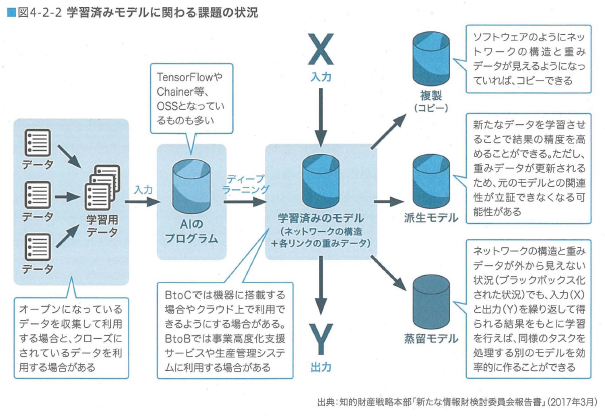
- そこで「派生モデル」及び「蒸留モデル」を考慮した学習済みモデルの保護の在り方について「契約」、「特許権」、「著作権」及び「新しい権利」の観点で検討が行われている（表4-2-3)。
- ■表4-2-3「派生モデル」及び「蒸留モデル」を考慮した学習済みモテルの保護の在り方の検討
- また、現状のビジネスにおいては、学習済みモデルを営業秘密として管理しつつ、出力等の結果を使ってサービスを提供するビジネス形態がある（学習済みモデルは不正競争防止法により保護される）。
- しかし、学習済みモデルを研究・開発の観点から再利用するなどのためにインターネット上などで公開する場合には、秘密管理性及び非公知性の要件を満たさなくなり、不正競争防止法による保護はなくなる。
- そこで、秘密として管理せずに利活用を広く進めることを支援するような法的な枠組みがビジネス上の選択肢として必要かどうかという問題を、データ利活用促進に向けた公正な競争秩序の確保の検討の中で併せて検討することが適当、としている。
- 不正競争防止法の改正
- 以上のような議論の結果、平成30年の不正競争防止法の改正により、たとえ秘密管理性や非公知性の要件を満たさないとしても、「業として特定の者に提供する情報として電磁的方法…（中略）…により相当量蓄積され、及び管理されている技術上又は営業上の情報」を「限定提供データ」として、一定の不正行為から保護されることになった（改正後不正競争防止法2条7項）。
- これによって、例えば、あるコンソーシアム内で共有されているビッグデータがIDとパスワードで管理されているような場合、これを不正の手段によって取得・使用・開示する行為等に対して差止等を請求できることになる。なお、この改正法は平成31年7月1日に施行される。
- (4) Al生成物に関する論点
- AIの生成物に関して、「AIを用いたサービスに関する保護の可能性」、「AIを活用した創作（著作物）に関する保護の可能性」及び「AI生成物が問題となる（悪用される等）可能性」の3つの課題について検討が行われている（表4-2-4)。
- Alを用いたサービスに関する保護の可能性
- Al生成物を用いたサービスの提供方法についてはピジネス関連発明として特許の可能性があること、一方でビジネス関連発明は日本国外においては認められないおそれがあるため各国の特許庁と引き続き国際的な調和の取組みを行うことが必要。
- Alを活用した創作（著作物）に関する保護の可能性
- 「AIを活用した創作（著作物）に関する保護の可能性」については、深層学習を利用したAI生成物の著作物性及び著作者に関する検討が行われている。
- 具体的には、学習済みモデルの利用者に創作意図がありかつ創作的寄与があれば、生み出されたAI生成物には著作物性が認められ利用者が著作者になる（図4-2-3上図）一方で、創作的寄与が認められないような簡単な指示に留まる場合はAI創作物として、現行の著作権法上は著作物と認められない（図4-2-3下図）と整理している。
- ■図4-2-3「Al 生成物」のイメージ
- 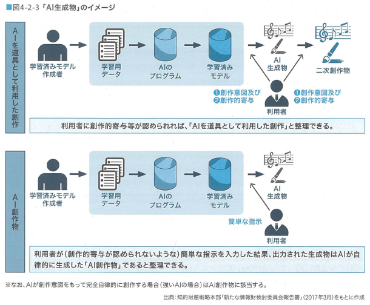
- ただし、具体的にどのような創作的寄与があれば著作物性が肯定されるかについては、利用者が学習済みモデルに画像を選択して入力するなど何らかの関与があればよいという指摘や、単にパラメーターの設定を行うだけであれば創作的寄与とはいえないのではないかとの指摘があり、現時点で、具体的な方向性を決めることは難しく、AI技術の進展に注視しながら、具体的な事例に即して引き続き検討することが適当、としている。
- Al生成物が問題となる（悪用される等）可能性
- 第三者の著作物であるデータ（音楽データ等）で機械学習した学習済みモデルが元のデータと類似するデータを出力する場合の問題、Al創作物を人間の創作であるとして市場に供給する問題が挙げられており、いずれも現状では明確な判断が難しく、事例や利活用状況を注視し、引き続き検討することが適当。
- 4.2.3 海外のAI知的財産関連動向
- AIと知的財産法制度を巡っては、昨今、日本国内で盛んな議論が展開されているが、諸外国においては、我が国のように大きな政策課題として論じられている国は見当たらない※2※3。ただ、諸外国においても、AIと知的財産法について以下のような状況がある。
- ※2 知的財産戦略本部・新たな情報財検討委員会においても、2017年1月30日~2月38にかけて、欧州委員会、マックスプランク研究所及びミュンヘン大学の有識者に対する欧州調査が行われたが、「Alの行った行為の責任に関する議論はされているが、知財に関する議論はほとんど行われていない」とされている（知的財産戦略本部検証・評価・企画委員会新たな情報財検討委員会「新たな情報財検討委員会報告書」別添参考資料集p.l0 「（参考7)欧州におけるデータ・ Alを巡る議論の状況」参照）。
- 後日、詳細入力
- 4.3 AIに関する原則、ガイドライン等
- 4.3.1 海外における取組み
- (1)政府における議論
- ●表4-3-1 各国の政府における主要な取組み
- 「AI・ロボティクス・自律システムに関する声明」【2018年3月欧州科学・新技術倫理グループ（EGE）】

- ①人間の尊厳
- ②自律性
- ③責任
- ④ 正義・公平・連帯
- ⑤民主主義
- ⑥法の支配と説明責任
- ⑦セキュリティ・安全性・心身の整合性
- ⑧ データ保護とプライバシー
- ⑨持続可能性
- (2)国際的な枠組みにおける議論
- ■表4-3-2国際的な枠組みにおける主要な会議
- (3)民間における議論
- ■表4-3-3民間における主要な取組み
- 4.3.2 我が国における「AI社会原則」の議論
- (1) 「人間中心のAl社会原則検討会議」に関連する動向
- 我が国においては、前項に示した海外における開発基準に関する検討の活発化を踏まえ、人工知能技術戦略会議の下に平成30年5月より、「人間中心のAI社会原則検討会議」が設置された。
- また、AI技術並びにAIの中長期的な研究開発及び利活用等をするにあたって考慮すべき倫理等に関する基本原則については、産学民官のマルチステークホルダーによる幅広い視野からの調査・検討を行うことを目的としている。
- 現在、平成30年度中に一定の結論を得ることを目指して、検討が進められている（図4-3-1)。
- ■図4-3-1 「人間中心のAl社会原則検討会議のアウトプットレベル（案）」
- 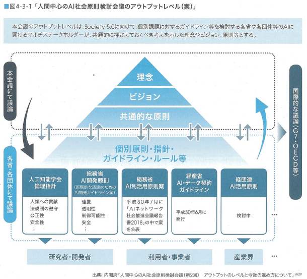
- 本会議のアウトプットレベルは、Society5.0に向けて、個別課題に対するガイドライン等を検討する各省や各団体等のAlに関わるマルチステークホルダーが、共通的に押さえておくべき考えを示した理念やビジョン、原則等とする。
- 構成
- 理念
- ビジョン
- 個別原則・指針・ガイドライン・ルール等
- 人工知能学会倫理指針
- 総務省AI開発原則（国際的な議論のためのAI開発ガイドライン案）
- 総務省AI利活用原則案
- 2018年7月に「AIネットワーク社会推進会議報告書2018」の中で案を公表
- 経産省AI・データ契約ガイドライン
- 経団連AI活用原則
- ■図4-3-2「AI利活用原則案」
- 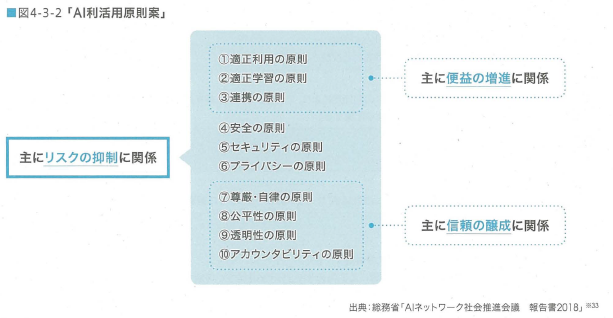
- 出典：総務省「Alネットワーク社会推進会議報告書2018」※33
- 主にリスクの抑制に関係
- 主に便益の増進に関係
- ：①適正利用の原則
- ：②適正学習の原則
- ：③連携の原則
- ④安全の原則
- ⑤セキュリティの原則
- ⑥プライパシーの原則
- 主に信頼の醸成に関係
- ：⑦尊厳・自律の原則
- ；⑧公平性の原則
- ：⑨透明性の原則
- ：⑩アカウンタピリティの原
- ■表4-3-4「AI利活用原則案」の解説と主な論点
- 1.適正利用の原則
- 利用者は、人間とAlシステムとの間及び利用者間における適切な役割分担のもと、適正な範囲及び方法でAlシステムまたはAlサービスを利用するよう努める。
- 【主な論点】
- （ア）適正な範囲・方法での利用
- （イ） Alの便益とリスクの適正なバランス
- （ウ） Alソフトのアップデート及びAlの点検・修理等
- （エ）人間の判断の介在
- （オ）利用者間の役割分担
- （力）関係者間の協力
- 2.適正学習の原則
- 利用者及びデータ提供者は、Alシステムの学習等に用いるデータの質に留意する。
- 【主な論点】
- （ア） Alの学習等に用いるデータの質への留意
- （イ）不正確または不適切なデータの学習等によるAlのセキュリティ脆弱性への留意
- 3.連携の原則
- Alサーピスプロバイダー、ピジネス利用者及びデータ提供者は、AlシステムまたはAlサービス相互間の連携に留意する。
- また、利用者は、Alシステムがネットワーク化することによってリスクが惹起・増幅される可能性があることに留意する。
- 【主な論点】
- （ア）相互接続性と相互運用性への留意
- （イ）データ形式やプロトコル等の標準化への対応
- （ウ） Alネットワーク化により惹起・増幅される課題への留意
- 4.安全の原則
- 利用者は、AlシステムまたはAlサービスの利活用により、アクチュエーター等を通じて、利用者等及び第三者の生命・身体• 財産に危害を及ぽすことがないよう配慮する。
- 【主な論点】
- （ア）人の生命・身体・財産への配慮
- 5.セキュリティの原則
- 利用者及びデータ提供者は、AlシステムまたはAlサービスのセキュリティに留意する。
- 【主な論点】
- （ア）セキュリティ対策の実施
- （イ）セキュリティ対策のためのサービス提供等
- （ウ）不正確または不適切なデータの学習によるAlのセキュリティ脆弱性への留意
- 6.プライバシーの原則
- 利用者及びデータ提供者は、AlシステムまたはAlサーピスの利活用において、他者または自己のプライバシーが侵害されないよう配慮する。
- 【主な論点】
- （ア）他者のプライバシーの尊重
- （イ）パーソナルデータの収集・分析・提供等におけるプライバシーの尊重
- （ウ） Alを利用したプロファイリングを行う場合におけるプライバシー等の配慮
- （エ）自己等のプライバシー侵害への留意
- （オ）パーソナルデータの流出の防止
- 7.尊厳・自律の原則
- 利用者はAlシステムまたはAlサービスの利活用において、人間の尊厳と個人の自律を尊重する。
- 【主な論点】
- （ア）人間の尊厳と個人の自律の尊重
- （イ） Alによる意思決定・感情の操作等への留意
- （ウ） Alと人間の脳・身体を連携する際の生命倫理等の議論の参照
- 8.公平性の原則
- Alサービスプロバイダー、ビジネス利用者及びデータ提供者は、AlシステムまたはAlサービスの判断によって個人が不当に差別されないよう配慮する。
- 【主な論点】
- （ア） Alの学習等に用いられるデータの代表性への留意
- （イ）アルゴリズムによる不当な差別への留意
- （ウ）人間の判断の介在
- 9.透明性の原則
- Alサービスプロバイダー及びビジネス利用者は、AlシステムまたはAlサービスの入出力の検証可能性及び判断結果の説明可能性に留意する。
- 【主な論点】
- （ア） Alの入出力の記録・保存
- （イ）説明可能性の確保
- 10.アカウンタピリティの原則
- Alサーピスプロバイダー及びビジネス利用者は、消費者的利用者や間接利用者を含むステークホルダーに対しアカウンタビリティを果たすよう努める。
- 【主な論点】
- （ア）アカウンタビリティを果たす努力
- （イ）Alに関する利用方針の通知・公表
- 出典：総務省「Alネットワーク社会推進会議報告書2018」をもとに作成※34
- ■図4-3-3AI・データの利用に関する契約ガイドラインの全体像
- 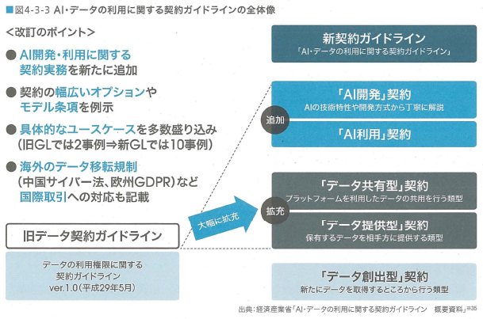
- (2)その他の政策や民間による取組みの動向
- 「人工知能間の交渉・協調・連携」に関する検討【一般社団法人産業競争力懇談会(COCN:Council on Competitiveness -Nippon)】
- ①当事者でのシミュレーション
- ②限定環境下での一部当事者による実動作
- ③限定環境下での当事者の拡大
- ④一般環境へ拡大
- 「保健医療分野におけるAI活用推進懇談会」【厚生労働省】
- 保健医療分野AI開発加速コンソーシアム【厚生労働省】
- ITS・自動運転に係る国家戦略「官民ITS構想・ロードマップ2017」【高度情報通信ネットワーク社会推進戦略本部(IT総合戦略本部）・官民データ活用推進会議】
- データ活用基盤・課題解決分科会道路交通ワーキングチーム】
- 【自動運転に係る制度整備
大網サブワーキングチーム】- 「自動運転に係る制度整備大綱」
- 「世界最先端デジタル国家創造宣言・官民データ活用推進基本計画」 【高度情報通信ネットワーク社会推進戦略本部(IT総合戦略本部）・官民データ活用推進会議】
- 「IT新戦略の策定に向けた基本方針」
- 「デジタル・ガバメント実行計画」
- ※39 高度情報通信ネットワーク社会推進戦略本部・官民データ活用推進戦略会議「自動運転に係る制度整備大網」
- https://www.kantei.go.jp/jp/singi/it2/kettei/pdf/20180413/auto_drive.pdf
- ※40 高情報通信ネットワーク社会推進戦略本部「世界最先端デジタル国家創造宣言・官民データ活用推進基本計画」
- https://cio.go.jp/sites/default/files/uploads/documents/digital_sengen_honbun_2018.pdf
- 「世界最先端デジタル国家」の創造に向け、政府の行政サービスを起点として、紙中心のこれまでの行政の在り方等を含めた大改革を断行することで、国民が安全で安心して暮らせ、豊かさを実感できる社会を実現することを目的に検討されたものである。
- 重点取組みの中の「抜本改革を支える新たな基盤技術等」の一つとしてAIを位置づけているほか、RPA等を活用したデジタル自治体行政の推進、また「世界最高水準の生産性を有する港湾物流の実現」等の分野横断型データ連携におけるユースケースの推進等が掲げられている。
- また、AIの社会・経済にもたらすインパクトやリスクの評価の国際的な共有、関連する社会的・経済的・倫理的・法的課題の解決に資するガバナンスの在り方に関して、G7やOECD等の場における国際的な議論を通じた検討と推進の必要性が指摘されている。
- 4.4 制度改革
- 概要
- 本節では、AIの社会実装に係る制度改革として注目すべきものとして、モビリティに関する制度改革とデータ流通に係る制度改革の2つについて解説する。
- 機械学習ではデータとフィードバックによりアルゴリズムが改善されるため、2つの制度改革を組み合わせて、いかにAIの学習環境を整備できるかが重要となる。
- 前者は開発したAIを物理空間で学習させるための制度改革である。本節ではモビリティ領域の制度改革の方向性や実証実験の現状などを解説する。
- 後者はデータの循環をデジタル空間で滞りなく行うための制度改革である。
- 本節では様々な領域におけるデータ流通について、それぞれ制度改革を概説する。
- 4.4.1 モビリティに係る制度改革
- (1)自動運転に係る制度整備
- ■図4-4-1「官民ITS構想・ロードマップ2018」の市場化・サービス実現シナリオと実現時期
- 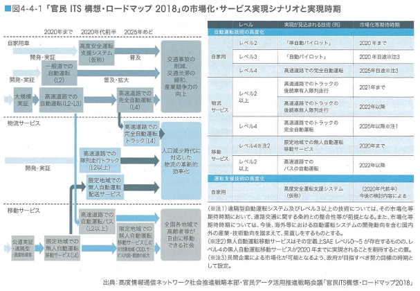
- ■図4-4-2官民ITS構想・ロードマップ2018(ロードマップ全体像）
- 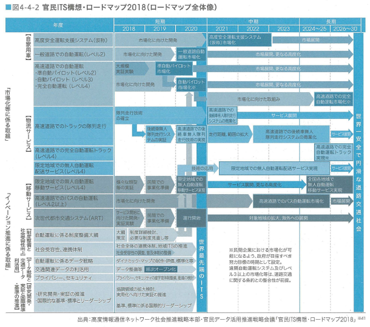
- ■表4-4-1自動運転の定義の概要
- ■図4-4-3制度整備大綱にもとづいた主な取組み事項と2020年の実現イメージ
- 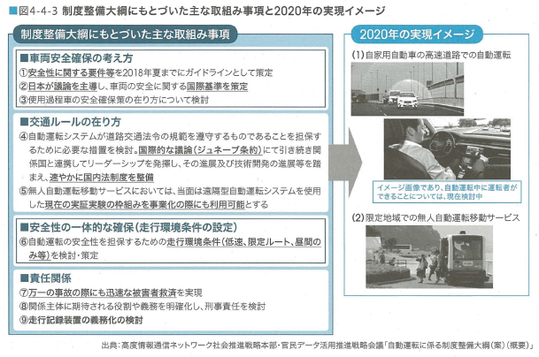
- ■図4-4-4日本における主な自動運転実証実験（予定含む）
- (2)ドローン
- ■図4-4-5空の産業革命に向けたロードマップ2018(小型無人機の安全な利活用のための技術開発と環境整備）
- 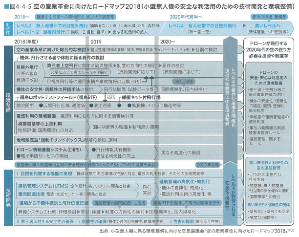
- 4.4.2 データ流通に係る制度改革
- 概要
- ●図4-4-6テータ流通環境の整備
- 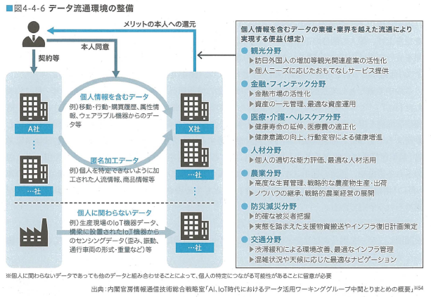
- ■表4-4-2データ流通・活用に関する主な取組み状況
- (l)パーソナルデータ
- ■図4-4-7PDSの定義
- 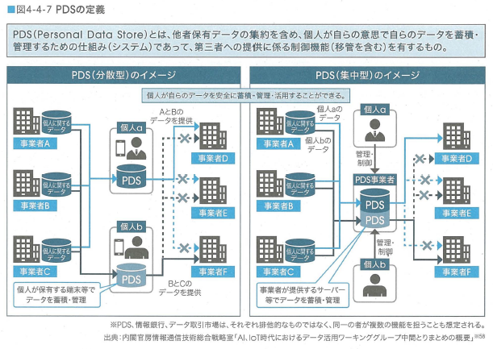
- ●図4-4-8情報銀行の定義
- 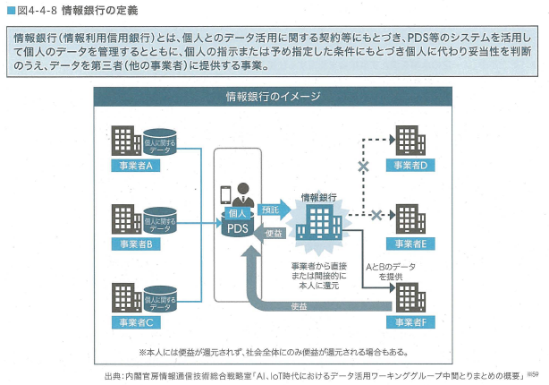
- ■図4-4-9テータ取引市場の定義
- 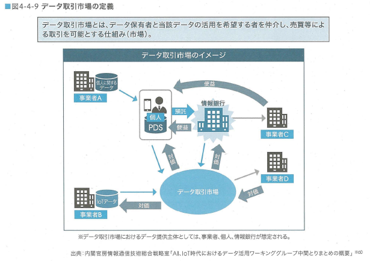
- ■図4.-4-10「情報信託機能の認定に係る指針verl.0」の概要
- 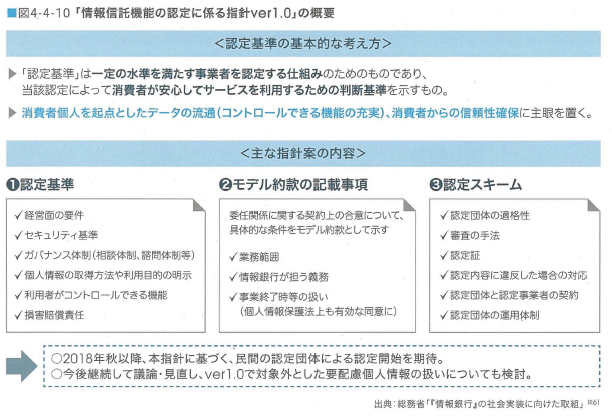
- ●図4-4-11 loT推進コンソーシアム
- ■図4-4-12カメラ画像利活用ガイドブックver2.0:リピート分析
- 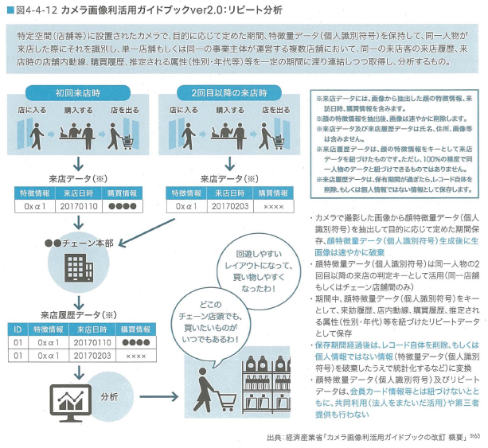
- (2)匿名加工されたテータ
- 概要
- 匿名加工情報とは「特定の個人を識別することができないように個人情報を加工し、当該個人情報を復元できないようにした情報」※64のことである。
- 平成27年9月の個人情報保護法の改正により新設された制度であり、一定のルールの下で、本人の同意が不要となるパーソナルデータの利活用を促進することを目的としている。
- 匿名加工情報それ自体は特定の産業を対象としているわけではないが、特に注目されているのが医療分野での活用である。平成30年5月に施行された「医療分野の研究開発に資するための匿名加工医療情報に関する法律」（次世代医療基盤法）は、医療情報の取得と利活用を促進することを目的としており、匿名加工医療情報の作成を認定事業者に集約するスキームが設計されている（図4-4-13)。
- 医療情報は要配慮個人情報に該当するため、匿名加工医療情報を第三者提供する場合には本人の同意が必要となるが、同法で規定されたスキームに従えば、オプトアウト手続きによる医療情報の取得と匿名加工処理された同情報の第三者提供が可能となる。
- ■図4-4-13次世代医療基盤法の全体像
- 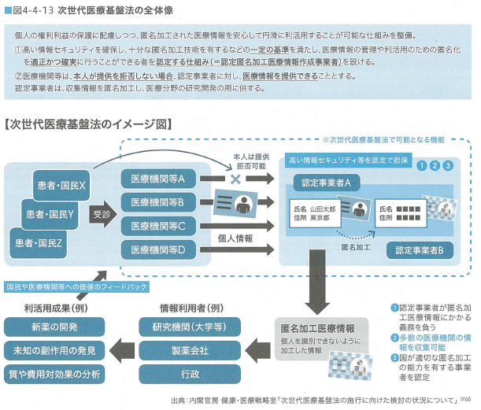
- (3)個人に関わらないテータ
- 内閣府の総合科学技術・イノベーション会議(CSTI)は、平成30年1月より「データ連携基盤サブワーキンググループ」を設置し、人工知能とビッグデータを共有・活用する「データ連携基盤」の取組みを推進している（図4-4-14)。
- 同プロジェクトは、戦略的イノベーション創造プログラム(SIP)などの研究開発プロジェクトで進められていた分野内でのデータ連携の取組みを、分野間の連携にまで推し進め、分野横断的プラットフォームを構築することを目指している。
- 連携の主な課題としては、多様なデータフォーマットなどの存在が挙げられており、データの構造や語彙の標準化が計画されている（図4-4-15)。
- 具体的な連携対象分野としては、①防災・減災、② インフラ維持管理、③自動走行、④農業、⑤材料、⑥海洋、⑦宇宙、⑧G空間情報センター、⑨地球環境情報PF、などが予定されている。
- ■図4-4-14テータ連携基盤の整備

- ■Society5.0の本格実装に向け、CSTIが司令塔機能を発揮し、データ連携基盤の取組みを推進
- ■「人工知能」とピッグデータを共有・活用する「データ連携基盤」はSociety5.0実現のための両輪
- ※欧米は、政府公共データを中心に様々なデータがつながる仕組みを構築しつつあり、「データ連携大競争時代」が到来
- ※日本は、各省、産業界の取り組むデータベースがバラパラなため、データ連携の仕組みの構築が急務
- ■図4-4-15共通語彙基盤(IMI;Infrastructure for Multi-layer Interoperability)
- 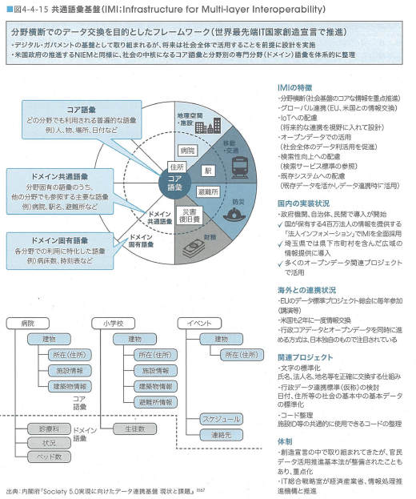
- 分野横断でのデータ交換を目的としたフレームワーク（世界最先端IT国家創造宣言で推進）
- ・デジタル・ガバメントの基盤として取り組まれるが、将来は社会全体で活用することを前提に設計を実施
- ・米国政府の推進するNIEMと同様に、社会の中核になるコア語彙と分野別の専門分野（ドメイン）語彙を体系的に整理
- 平成30年6月には「生産性向上特別措置法」が施行され、データ流通に係る取組みとして「産業データ共有事業の認定制度」が創設された※68。
- 生産性向上特別措置法は、革新的な技術やビジネスモデルを用いた事業活動による生産性向上を目的とした政策パッケージであり、
- ①「プロジェクト型『規制のサンドボックス』制度の創設」*69、
- ② 「データの共有・連携のためのIoT投資の減税等」、
- ③「中小企業の生産性向上のための設備投資の促進」
- の3つの施策を軸としている。（図4-4-16)。
- ●図4-4-16生産性向上特別措置法案における主な措置事項※70
- 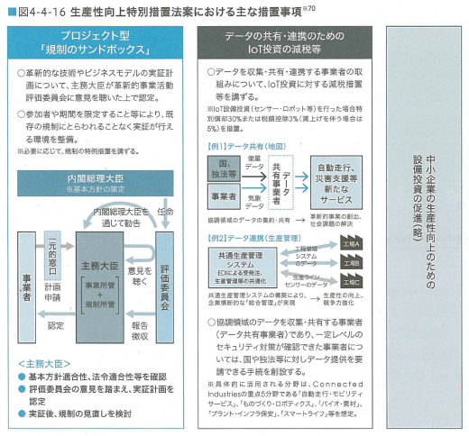
- 「①プロジェクト型『規制のサンドボックス」制度の創設」は、
- 参加者や期間を限定すること等により、既存の規制にとらわれることなく新しい技術等の実証を行うことができる環境を整備することで、迅速な実証及び規制改革につながるデータの収集を可能とするものである。
- また、ConnectedIndustries関連政策である「産業データ共有事業の認定制度」は
- 「②データの共有・連携のためのIoT投資の減税等」の一環であり、協調領域におけるデータの収集・活用等を行う民間事業者の取組みを、セキュリティ確保等を要件として主務大臣が認定して支援する（図4-4-17)。
- ■図4-4-17産業データ共有事業の認定制度
- 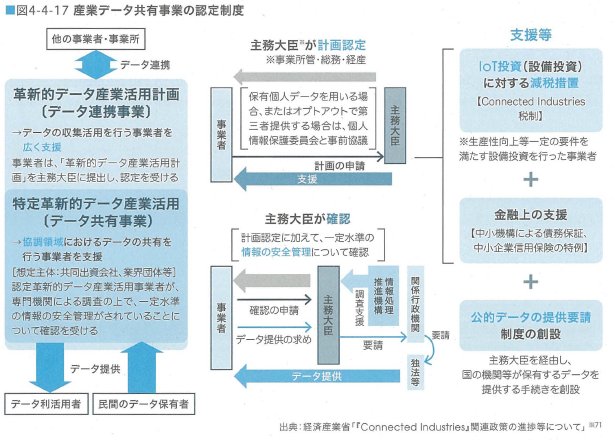
- 産学官が連携したデータ流通に係る取組みとしては、前述のIoT推進コンソーシアムが、平成29年4月に「データ流通プラットフォーム間の連携を実現するための基本的事項」を公表している。
- 同コンソーシアムは、平成29年2月より「データ連携サブワーキンググループ」を開催し、データ流通プラットフォームを提供する事業者がデータ連携のために最低限共通化すべき事項について検討してきた。
- その検討結果として、データカタログ（メタデータ）とカタログ用APIの整備が必要事項として整理されている。
- また平成29年11月には、IoT推進コンソーシアム・総務省・経済産業省などでの検討を踏まえて、一般社団法人データ流通推進協議会が設立された。
- 同協議会の目的は「データ提供者が安心して、かつスムーズにデータを提供でき、またデータ利用者が欲するデータを容易に判断して収集・活用できる技術的・制度的環境を整備すること等」汲72であり、データ流通事業者間の相互連携の推進や、データフォーマットの整備などを行う。
- 4.5 国内の政策動向
- はじめに
- 内閣府が平成30年度の経済財政政策の基本方針を示した「経済財政運営と改革の基本方針2018」（骨太の方針2018)では、
- 潜在成長率の引き上げや重要課題への取組みとして、未来社会のビジョンSociety5.0の実現が目標として掲げられている。
- また、平成30年度の成長戦略を示した「未来投資戦略2018」においても、
- 第4次産業革命の技術革新を活かして、Society5.0を実現することが目標に掲げられている。
- AI技術は
- Society5.0を構築するための基盤技術の一つ※73であり、同ビジョンを実現するための規制改革や、研究開発及び投資・イノベーションを推進する政策とは不可分な関係にある。
- 近年のAIに関する国内政策は、
- 研究開発から社会実装まで一気通貫した取組みが志向されており、産学官を横断した施策や会議体の縦横連携が拡大している。
- その中で中心的な役割を担うのが、
- ①統合イノベーション戦略推進会議
- ②総合科学技術・イノベーション会議(CSTI)
- ③人工知能技術戦略会謙
- の3つの会議体である（図4-5-1)。
- ■図4-5-1国内のAl政策における府省庁連携体制
- 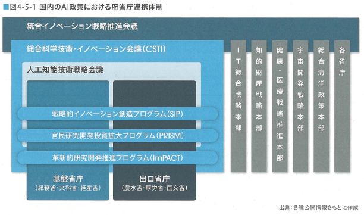
- 統合イノベーション戦略推進会議
- 概要
- 「統合イノベーション戦略」（平成30年６月15日閣議決定）に基づき、イノベーションに関連が深い司令塔会議である総合科学技術・イノベーション会議、高度情報通信ネットワーク社会推進戦略本部、知的財産戦略本部、健康・医療戦略推進本部、宇宙開発戦略本部及び総合海洋政策本部並びに地理空間情報活用推進会議について、横断的かつ実質的な調整を図るとともに、同戦略を推進するため、内閣に統合イノベーション戦略推進会議（以下「会議」という。）を設置する。
- 総合科学技術・イノベーション会議（CSTI）
- 概要
- 総合科学技術会議は、平成13年1月の中央省庁再編に伴い、「重要政策に関する会議」の1つとして内閣府に設置されました。 内閣総理大臣のリーダーシップの下、科学技術・イノベーション政策の推進のための司令塔として、わが国全体の科学技術を俯瞰し、総合的かつ基本的な政策の企画立案及び総合調整を行っています。内閣府設置法の一部を改正する法律（平成26年法律第31号）の施行に伴い、会議の名称を「総合科学技術・イノベーション会議」と変更しています。
- 人工知能技術戦略会議
- 概要
- 「日本再興戦略」改訂2015（平成27年6月30日閣議決定）では、IoT、ビッグデータ、人工知能による産業構造・就業構造変革の検討が主要施策の一つとして掲げられています。
- また、「第5期科学技術基本計画」（平成28年1月22日閣議決定）においても、「「超スマート社会」の実現に向けた共通基盤技術や人材の強化」として、AI等の重点的に取り組むべき技術課題等を明確にし、関係府省の連携の下で戦略的に研究開発を推進することが求められています。
- 具体的な推進体制として、産学官の叡智を集め、縦割りを排した「人工知能技術戦略会議」が創設されました。
- 同会議が司令塔となり、総務省・文部科学省・経済産業省が所管する5つの国立研究開発法人を束ね、人工知能（AI）技術の研究開発を進めるとともに、AIを利用する側の産業の関係府省と連携し、AI技術の社会実装を進めています。
- 本会議の下にはAI技術の研究開発と成果の社会実装を加速化させるために「研究連携会議」と「産業連携会議」が設置されています（第1回から第5回までは人工知能技術戦略会議サイトに掲載されております）。
- プログラム
- 戦略的イノベーション創造プログラム（SIP）
- 官民研究開発投資拡大プログラム（PRISM）
- 革新的研究開発推進プログラム（ImPACT）
- 基盤省庁
- 総務省
- 文科省
- 経産省
- 出口省庁
- 農水省
- 厚労省
- 国交省
- IT総合戦略会議
- 知的財産戦略本部
- 健康・医療戦略推進本部
- 宇宙開発戦略本部
- 総合海洋政策本部
- 各省庁
- 4.5.1 統合イノベーション戦略、同推進会議による政府横断の取組み
- 内閣府の総合科学技術・イノベーション会議(CSTI)は、現在の我が国の科学技術政策の基本計画を定めた「第5期科学技術基本計画」（第5期基本計画） ※75を所管しており、年度ごとに重点分野を定めた「科学技術イノベーション総合戦略」※76を策定している。
- 第5期基本計画の折り返し点である平成30年6月には、これまでの計画や総合戦略を評価し、今後とるべき取組みを示した「統合イノベーション戦略」※77が閣議決定された。
- それにもとづき、イノベーションに関連が深い司令塔会議である総合科学技術・イノベーション会議、高度情報通信ネットワーク社会推進戦略本部、知的財産戦略本部、健康・医療戦略推進本部、宇宙開発戦略本部及び総合海洋政策本部並びに地理空間情報活用推進会議について、横断的かつ実質的な調整を図るとともに、同戦略を推進するため、内閣に統合イノベーション戦略推進会議※78が設置された（図4-5-2)。
- AIをはじめとするイノベーションのための各種会議を有効に機能させ、政策を統合して「全体最適化」を図り、一丸となって、迅速かつ確実に実行することを目的としている。
- 統合イノベーション戦略推進会議には、総理大臣補佐官をチーム長とし、各司令塔会議事務局・各省庁幹部を構成員とするイノベーション政策強化推進チームが設置され、AI等個別テーマごとに有識者会議の提言をもとに施策の推進を図ることとしている。
- 第2回(9月28日）の会議では、有識者より「AI戦略（案）全体俯敵図」が提出され、教育改革、研究開発、社会実装の3つの視点からのAIの推進が提案された※79。
- これを踏まえ、具体的な「政策パッケージ」の策定が開始されている※800
- ■図4-5-2統合イノベーション戦略の推進体制
- 統合イノベーション戦略は、科学技術イノベーション創出の基礎となる「知の源泉」を構築し、それを踏まえて産学が様々な「知を創造」することにより、その知が創業や政府事業を通じて次々に社会実装されて国内外に展開される、というモデルを想定して立案されている。
- 「知の源泉」については、データ・情報がキーであるとして、データ基盤の重要性がうたわれている。
- 具体的には、Society5.0の実現に向けたデータ連携基盤の整備（図4-5-3)や、オープンサイエンスのためのデータ基盤の整備が計画されている。
- Society5.0の実現に向けたデータ連携基盤の整備については、「4.4.2データ流通に係る制度改革」を参照されたい。
- ■図4-5-3統合イノベーション戦略で示されたSociety5.0の実現に向けたテータ連携基盤の整備
- 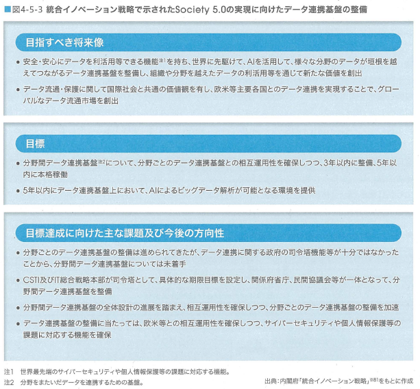
- 目指すべき将来像
- ・安全・安心にデータを利活用等できる機能注lを持ち、世界に先駆けて、Alを活用して、様々な分野のデータが垣根を越えてつながるデータ連携基盤を整備し、組織や分野を越えたデータの利活用等を通じて新たな価値を創出
- ・データ流通・保護に関して国際社会と共通の価値観を有し、欧米等主要各国とのデータ連携を実現することで、グローバルなデータ流通市場を創出
- 目標
- ・分野間データ連携基盤（注2）について、分野ごとのデータ連携基盤との相互運用性を確保しつつ、3年以内に整備、5年以内に本格稼働
- ・5年以内にデータ連携基盤上において、Alによるピッグデータ解析が可能となる環境を提供
- 目標達成に向けた主な課題及び今後の方向性
- ・分野ことのデータ連携基盤の整備は進められてきたが、データ連携に関する政府の司令塔機能等が十分ではなかったことから、分野間データ連携基盤については未着手
- ・CSTI及びIT総合戦略本部が司令塔として、具体的な期限目標を設定し、関係府省庁、民間協議会等が一体となって、分野間データ連携基盤を整備
- ・分野間デ＿夕連携基盤の全体設計の進展を踏まえ、相互運用性を確保しつつ、分野ごとのデータ連携基盤の整備を加速
- ・データ連携基盤の整備に当たっては、欧米等との相互運用性を確保しつつ、サイバーーセキュリティや個人情報保護等の課題に対応する機能を確保
- 「知の創造」については、
- 研究人材の強化やマネジメント手法の高度化が目標とされており、CSTIが所管する戦略的研究開発プログラムの今後の方向性（図4-5-4)や、大学改革等によるイノベーション・エコシステムの創出などが示されている。
- CSTIの戦略的研究開発プログラムは、府省庁や産学官を横断した施策としてCSTIが予算配分の権限を有しており、Society5.0の実現に向けた我が国の科学技術イノベーション戦略の柱である。
- 統合イノベーション戦略において、
- AI技術は特に取組みを強化すべき主要分野※82の一つに位置づけられており、目指すべき将来像や今後の方向性が打ち出されている（図4-5-5)。
- AI技術を中心としたIT人材の不足が問題視されており、レベルに応じた人材の育成・活用の指針が定められている。
- また、米国や中国に対する劣後について、自前主義を脱却し、産学官の英知を結集して社会実装を迅速に進めていくことの必要性が主張されている。
- ■図4-5-4統合イノペーション戦略で示された戦略的な研究開発の方向性(SIP、PRISM、lmPACT)
- 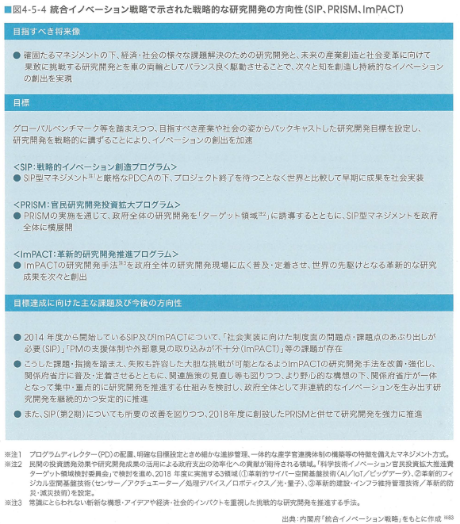
- ■図4-5-5統合イノベーション戦略で示されたAl技術の今後の方向性
- 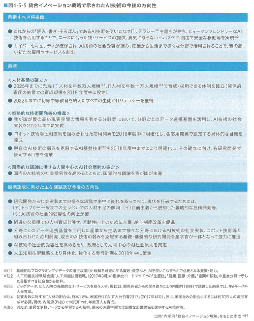
- 目指すべき将来像
- ● これからの「読み・書き•そろばん」であるAl 技術を使いこなすIT リテラシーを誰もが持ち、ヒューマンフレンドリーなAl技術を活用することで、ニーズに合った物・サービスの提供、病気にならないヘルスケア、自由で安全な移動等を実現
- ● サイバーセキュリティが確保され、Al技術の社会受容が進み、産業から生活まで様々な分野で活用されることで、質の高い新たな雇用やサービスを創出
- 目標
- く人材基盤の確立＞
- ● 2025年までに先端IT人材を年数万人規模、IT人材を年数十万人規模で育成・採用できる体制を確立（関係府省庁の施策での育成規模を2018年度中に設定）
- ● 2032年までに初等中等教育を終えたすべての生徒がITリテラシーを獲得
- く戦略的な技術開発等の推進＞
- ● 我が国が質の高い現実空間の情報を有する分野等において、分野ごとのデータ連携基盤を活用し、Al技術の社会実装を2022年までに実現
- ● ロポット技術等とAl技術を組み合わせた応用開発を2018年度中に明確化し、各応用開発で設定する具体的な目標を達成
- ● 現在のAl技術の弱みを克服するAl基盤技術注5を2018年度中までにより明確化し、その確立に向け、各研究開発で設定する目標を達成
- く国際的な議論に供する人間中心のAl社会原則の策定＞
- ● 国内のAl技術の社会受容性を高めるとともに、国際的な議論を我が国が主導
- 目標達成に向けた主な課題及び今後の方向性
- ● 研究開発から社会実装までの様々な段階で米中に後れを取っており、現状を打破するためには、
- （ア）トップから一般までの全レベルでの人材不足の解消
- （イ）自前主義から脱却した戦略的な技術開発等
- （ウ） Al技術の社会的受容性の向上が鍵
- ● 桁違いな規模での人材育成と併せ、流動性向上のために人事・給与制度改革を促進
- ● 分野ごとのデータ連携基盤を活用した産業から生活まで様々な分野におけるAl技術の社会実装、ロポット技術等と組み合わせた応用開発、現在のAl技術の弱みを克服する基礎・基盤的な研究開発を産学官が一体となって強力に推進
- ● Al技術の社会的受容性を高めるため、政府として人間中心のAl社会原則を策定
- ● 人工知能技術戦略をより具体化・強化する実行計画を2018年中に策定
- 出典：内閣府「統合イノベーション戦略」をもとに作成※84
- 4.5.2 人工知能技術戦略会議による研究開発・産業連携の推進
- AIの研究開発と社会実装に向けた具体的な取組みについては、CSTIの下部にある「人工知能技術戦略会議」が司令塔機能を有している。
- 同会議は平成28年4月に開催された「未来投資に向けた官民対話」における総理指示を受けて創設された会議体であり、基盤省庁（総務省・文部科学省・経済産業省）が所管する5つの国立研究開発法人を束ねて研究開発を進めるとともに、AIを利用する側の出口省庁（農林水産省・厚生労働省・国土交通省）や内閣府と連携して、AI技術の社会実装を進めている（図4-5-6)。
- ■図4-5-6人工知能技術戦略会議の連携体制
- 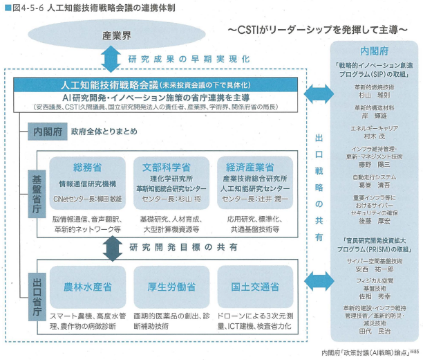
- 人工知能技術戦略会議は、AIの研究開発から社会実装まで一貫した取組みを加速させるべく、平成29年3月に「人工知能技術戦略」を策定した。
- また、同戦略の取組み進捗や課題を踏まえ※86、取組み内容を具体化した「人工知能技術戦略実行計画」を、平成30年8月に公表した。
- 同計画では、人工知能技術戦略で定められた5つの施策について、統合イノベーション戦略と軌を一にするように、関係各府省庁の具体的な取組み内容が示されている（表4-5-1)。
- 達成時期については、統合イノベーション戦略と同様、特に②人材育成への対応が急務とされている。
- ■表4-5-1人工知能技術戦略実行計画の概要
- 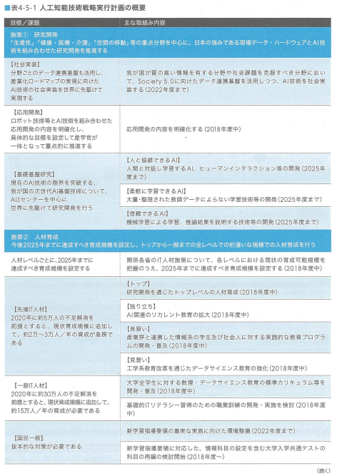
- 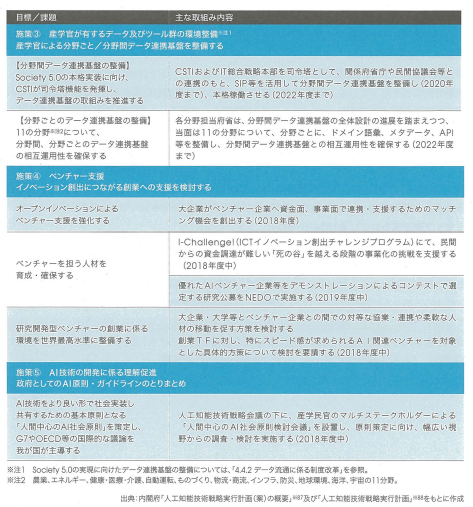
- 人工知能技術戦略会議の運営は、研究の総合調整を担う「研究連携会議」、研究開発と産業の連携総合調整を担う「産業連携会議」及びAI技術やAI開発等において考慮すべき倫理等を議論するための「人間中心のAI社会原則検討会議」の3つの会議体を軸として行われている。
- 研究連携会議には、総務省の所管する情報通信研究機構(NICT)、文部科学省の所管する理化学研究所（理研）と科学技術振興機構(JST)、経済産業省の所管する産業技術総合研究所（産総研）と新エネルギー・産業技術総合開発機構(NEDO)の5センターが参画している。
- その中で主翼を担っているのは、NICT・理研・産総研の3センターであり、それぞれ以下の研究テーマを担当している。
- NICTの脳情報通信融合研究センター(CiNet)とユニバーサルコミュニケーション研究所(UCRI)では、自然言語処理、多言語音声翻訳、脳情報通信などの研究を実施している。
- 理研の革新知能統合研究センター(AIP)では、小規模データから高精度学習が可能となる新たなアルゴリズムの開発など、基礎研究・墓盤技術の研究を中心としている。
- 産総研の人工知能研究センター(AIRC)では、それらの研究成果を産業分野へ応用する研究などを実施している。
- 研究開発の動向については、2章「技術動向」を参照されたい。
- 産業連携会議は、AI技術に関する人材育成、標準化・ロードマップ作成、技術・知財動向分析、規制改革分析などを担っている。
- 平成29年3月には、同会議での検討結果をもとに「人工知能とその他関連技術の融合による産業化のロードマップ」が策定されており、人工知能技術戦略会議の依拠する産業化ロードマップが示されている。
- 同ロードマップは、①AI技術が他の関連技術と融合し、②様々な社会課題を解決することで※89、③大きな産業へと成長する、という視点に立脚して策定されている。
- ①については、技術面での可能性を整理したものとして、AI技術の発展段階が整理されている（図4-5-7)。
- ② と③については、喫緊の課題かつAI技術による貢献と経済効果が大きな重点分野として、「生産性」、「健康、医療・介護」、「空間の移動」及び横断的な「情報セキュリティ」の4分野について、ロードマップが策定されている（図4-5-8)。
- 人間中心のAI社会原則検討会議は、2018年5月に設置され、AIをより良い形で社会実装し共有するための基本原則となる人間中心のAI社会原則を策定し、同原則をG7及びOECD等の国際的な議論に供するため、AI技術並びにAIの中長期的な研究開発や利活用等にあたって考慮すべき倫理等に関する基本原則について、産学民官のマルチステークホルダーによる幅広い視野からの調査・検討を行うことを目的としている。
- 2018年度中に一定の結論を得ることを目指して、検討が進められている（詳細は、「4.3.2我が国における「AI社会原則」の議論」を参照） 。
- ■図4-5-7フェーズによるAlの発展段階の整理
- 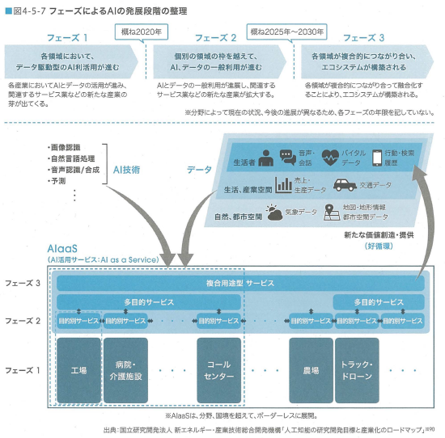
- ■図4-5-8Alの研究開発目標と産業化のイメージ
- 人工知能技術戦略会議では、産業化ロードマップの実現に向けて、CSTIの所管する戦略的イノベーション創造プログラム(SIP)及び官民研究開発投資拡大プログラム(PRISM)との連携が検討されている（図4-5-9、図4-5-10)。
- SIPは、CSTIが府省・分野の枠を超えて自ら予算配分を行い、基礎研究から出口（実用化・事業化）までを見据え、規制・制度改革を含めた取組みを推進するプログラムである※92。
- PRISMは、民間の研究開発投資誘発効果の高い領域（ターゲット領域）を定め、各府省の施策を誘導して連携を図るとともに、必要に応じて追加の予算を配分することで領域全体としての方向性を持った研究開発を推進するプログラムである※93。
- PRISMは新型SIPとも呼称されており、既存SIPとの二本立ての施策として、CSTIによる司令塔機能を通じた相乗効果が期待されている。
- ■図4-5-9重点テーマの特定とSIP/PRISMを中核とした省庁連携推進（案）
- 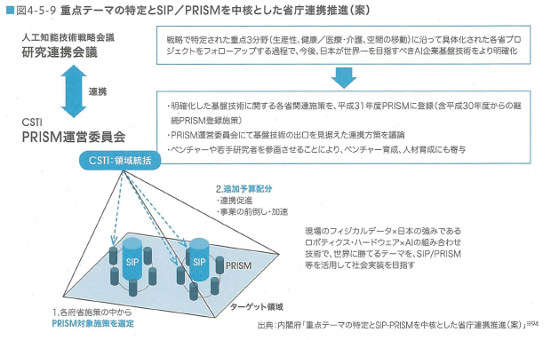
- ■図4-5-1o Society 5.0の実現のための11システムに対するSIPとPRISMのターゲット領域
- 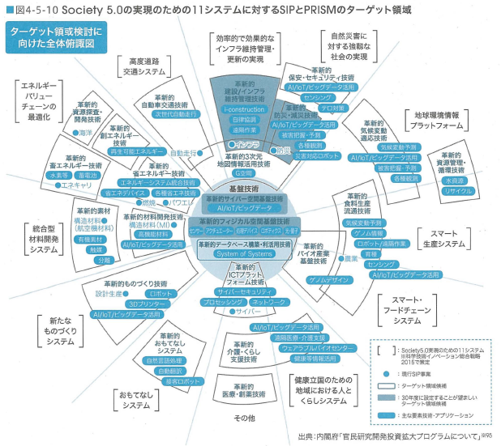
- 以下に、CSTIが所管する3つの戦略的研究開発プログラムのうち、特にAI技術の活用がうたわれているものをまとめた（表4-5-2)。
- 革新的研究開発推進プログラム(ImPACT)は、実現すれば産業や社会の在り方に大きな変革をもたらす革新的な科学技術イノベーションの創出を目指し、ハイリスク・ハイインパクトな挑戦的研究開発を推進するプロジェクトである。
- ■表4-5-2特にAl技術の活用がうたわれている戦略的研究開発プログラム(SIP、PRISM、lmPACT)
- 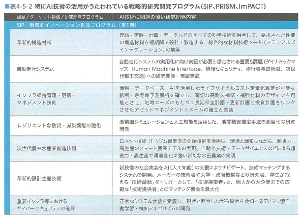
- 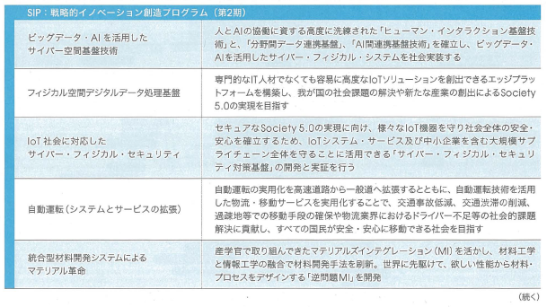
- 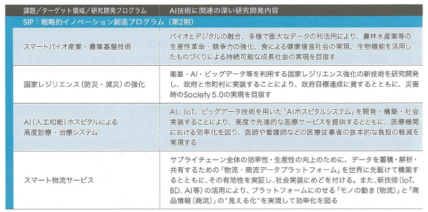
- 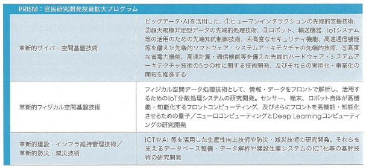

- 4.5.3 基盤省庁・出口省庁の方針と動向
- はじめに
- AIの推進においては、基盤省庁はAI技術に対する投資とイノベーションの推進、出口省庁はICTの利活用と規制改革の推進が政策の主軸となっている。
- 例えば基盤省庁では、情報通信行政を総務省が担い、教育と科学を担う文部科学省は研究開発を推進し、産業の育成と振興を担う経済産業省が、社会実装に近い領域でのイノベーションを推進している。
- また出口省庁については、そもそもITの利活用が進んでいない領域も多く、AIの社会実装の前段階として、主としてデジタル化やデータ利活用の取組みが検討されている。ただし、自動運転に関する領域については、交通政策を担う国土交通省を中心として、活発な動きがある。
- 本項では、上記の俯暇的見方を念頭に置き、各省のSociety5.0の実現に向けたビジョン及び技術政策の基本方針を定めた文書などを参照し、各省における情報通信技術(ICT)及びAI技術の位置づけを示し、AIに焦点を定めたいくつかの取組みについて紹介する。
- また最後に、内閣府及び各省の公開資料をもとに、各省のAI関連の予算を概観する。
- (l)総務省
- 情報通信行政を担う総務省では、次世代の情報通信技術における基盤技術という視点にもとづき、研究開発から社会実装、利活用の推進から原則・指針の策定まで、幅広い政策が打たれている。
- 同省の研究開発の基本方針は、平成26年12月18日諮問第22号「新たな情報通信技術戦略の在り方」※97に対して、情報通信審議会が毎年公表している中間答申により示されている。
- 平成29年7月に公表された第3次中間答申では、言語処理技術や脳情報通信技術などの次世代AIの社会実装と、その駆動力となる良質なデータを利活用できる環境整備の必要性がうたわれており、新たな戦略として「次世代人工知能社会実装戦略」と「次世代AIx ICTデータビリティ戦略」が打ち出された（図4-5-11)。
- 次世代人工知能社会実装戦略では、自然言語処理技術と脳情報通信技術が融合し、マン・マシン・インターフェース技術として社会実装につながることを見据えたロードマップが策定されている（図4-5-12)。次世代AIxICTデータビリティ戦略では、重要分野の良質なデータの戦略的確保や、異分野データの連携のための環境整備のための方策など、ICTデータビリティを推進する施策がまとめられている。
- ■図4-5-11 次世代AlxlCTデータピリティによる技術開発及び社会実装の推進方策
- ・Society5.0実現に向けた熾烈な国際競争の中で、我が国社会の生産性向上と豊かで安心な生活を実現するため、NICTの最先端の言語処理技術、脳情報通信技術等の次世代Alの社会実装を図ることが喫緊の課題である。
- （人工知能技術戦略会議の下で、総務省は我が国の言語処理技術、脳情報通信技術等、革新的ネットワーク等の研究開発と社会実装を担当する。）
- ・また、その駆動力となるユーサー企業等の多様な現場データ、言語、脳情報、宇宙等の重要分野の良質なデータを戦略的に確保するとともに、異分野データを連係させて、安全、利便性高くAlで利活用し、価値創出を図るための環境整備(「ICTデータピリテイ」）を推進することが必要である。
- ・このため、『次世代Al社会実装戦略』、『次世代AlxlCTデータピリティ戦略』を一体的に取りまとめる。

- ■図4-5-12次世代Al社会実装戦略取組みロードマップ
- 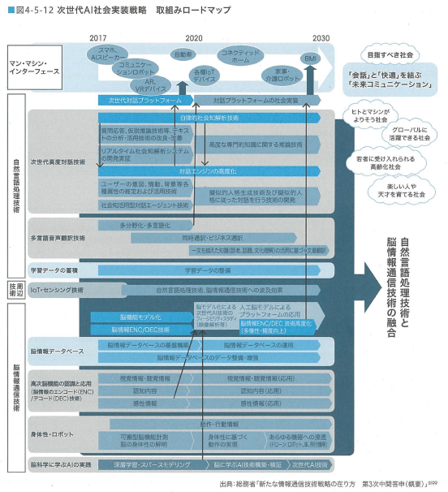
- 総務省の具体的な取組みは、平成28年10月に設立された「AIネットワーク社会推進会議」において行われている。
- 同会議は総務省内の研究会の一つであり、社会全体におけるAIネットワーク化の推進に向けた社会的・経済的・倫理的・法的課題の総合的な検討を目的としている。
- 総務省清報通信政策研究所が平成28年2月から6月まで開催していたAIネットワーク化検討会議を前身としており、これまでにAI開発原則やAI利活用原則を策定している（同会議の動向や策定された原則の内容については、本章「4.3AIに関する原則、ガイドライン等」を参照）。
- また平成29年4月には、AI分野のオープンイノベーション拠点として「知能科学融合研究開発推進センター(AIS)」が設立された。
- AISでは、学習データを共有・提供する「AIデータテストベッド」ゃ、オールジャパン体制で翻訳データを集積する「翻訳バンク」の構築・運営などが行われている。
- 平成30年度予算では、AIによる要件理解等によりネットワークリソースを自動最適制御する「AIによるネットワーク自動最適制御技術等の研究開発の推進」や、ベンチャー企業や大学などの事業を支援する「I-Challenge!(ICTイノベーション創出チャレンジプログラム）」などが行われている。
- NICTの研究開発動向については、第2章「2.10.1各国の研究開発の現状」を参照されたい。
- (2)文部科学省
- 科学技術基本計画に係る権限はCSTIに移管されたものの、同計画における文部科学省の役割は重要である。
- 同省の平成30年度の科学技術関係予算は政府全体の54.4%;100を占めており、科学研究費補助金の配分を担う独立行政法人日本学術振興会(JSPS)や、科学技術イノベーション振興の基幹を担う国立研究開発法人科学技術振興機構(JST)は、いずれも同省が所管している。
- 具体的な取組みとしては、平成28年より「人工知能／ビッグデータ/IoT/サイバーセキュリティ統合プロジェクト」(AIPプロジェクト）が実施されている。
- 同プロジェクトの研究開発拠点として、前述した理化学研究所に設置された「革新知能統合研究センター」は、人工知能技術戦略会議の中核をなす3センターの一つである。
- 同センターの研究開発動向の概要は表4-5-3のとおりであるが、詳細は2章「技術動向」を参照されたい。
- ■表4-5-3理化学研究所r革新知能統合研究センター」の概要
- 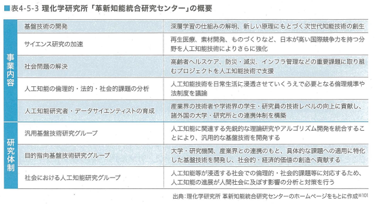
- また、JSTの社会技術研究開発センター(RISTEX)では、平成28年度より公募型研究開発領域「人と情報のエコシステム」屯102を実施している。
- 同研究開発領域では、人間を中心とした視点でAIやロボットなどの先端情報技術を捉え直し、一般社会への理解を深めながら技術や制度を協調的に設計していくことを目指している。
- 具体的な研究開発テーマとしては、領域全体が目指すべきアウトプットとして「共進化プラットフォーム」を主軸とし、「法律・制度」、「倫理・哲学」、「経済・雇用」、「教育」、「人間中心視点による技術開発」の6つが設定されており、社会科学の領域が広く含まれていることが特徴である。
- (3)経済産業省
- ① Connected Industries
- 経済産業省はSociety5.0の実現に向けた基本方針として、平成29年5月に産業構造審議会より「新産業構造ビジョン」を公表している。
- 同構想では、第4次産業革命による技術変化を活かし、様々なつながりにより新たな付加価値を創出する「ConnectedIndustries」への産業構造の転換が提起されている（図4-5-13)。
- また、そのために打破すべき障壁として、
- ①不確実性の時代に合わない硬直的な規制、
- ②若者の活躍・世界の才能を阻む雇用・人材システム、
- ③世界から取り残される科学技術・イノベーションカ、
- ④不足する未来に対する投資、
- ⑤データxAIを使いにくい土壌／ガラパゴス化
- の5点が挙げられており、研究開発より産業振興に重点を置いている。
- ■図4-5-13Society 5.0につながるConnectedIndustrie
- 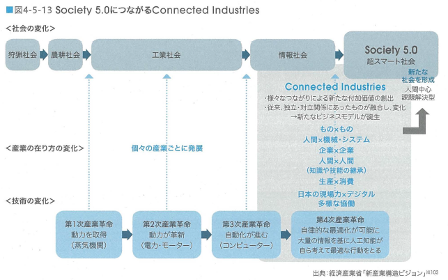
- 同構想では、第4次産業革命の核となるデータを巡る競争が、バーチャルからリアルヘと移行していることを踏まえ、海外事業者に対して巻き返しを図るべく、リアルデータのプラットフォーム創出を主軸とした2つの基本戦略が策定されている。
- 第一に、ものづくりの強みと課題先進国の機会を活かせる4 つの戦略分野（「移動する」「生み出す・手に入れる」「健康を維持する•生涯活躍する」「暮らす」）について、それぞれ2030年代のビジョンと、実現のためのロードマップ及び関連施策が示されている。
- 第二に、産業構造や就業構造の抜本的変革における7つの横断的課題について、対応方針や施策が示されている。
- 「ルールの高度化」
- 「人材育成・活用システム」
- 「イノベーションエコシステム」
- 「社会保障システム」
- 「地域経済・中小企業システム」
- 「経済の新陳代謝システム」
- 「グローバル展開」
- 2017年10月には、同構想を踏まえ、我が国の産業が目指すべき姿（コンセプト）として、世耕経済産業大臣より「『ConnectedIndustries』東京イニシアティブ2017」が発表された。
- 同コンセプトでは、同構想で示された4つの戦略分野が図4-5-14の5つの重点取組み分野に、7つの横断的課題が図4-5-15の3つの横断的な施策に整理し直されている。
- ■図4-5-14rconnected Industries」5つの重点取組み分野
- 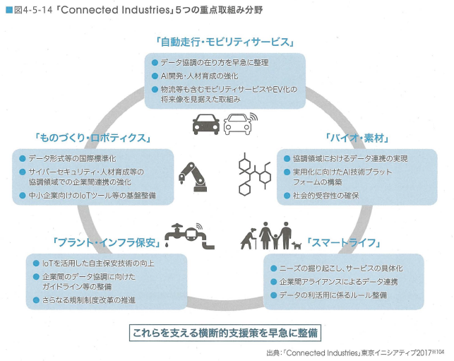
- ■図4-5-15 ℃ onnected Industries」の横断的な政策
- 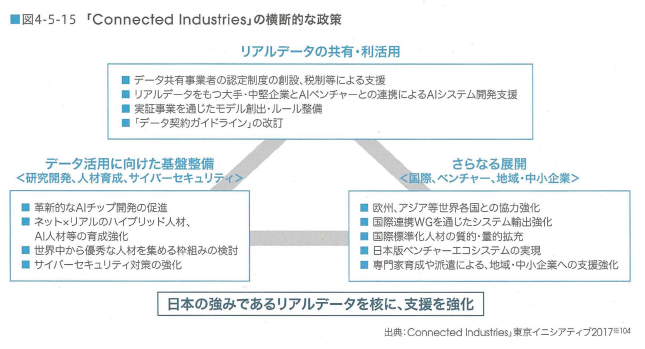
- ■表4-5-4「ConnectedIndustries」の進捗
- 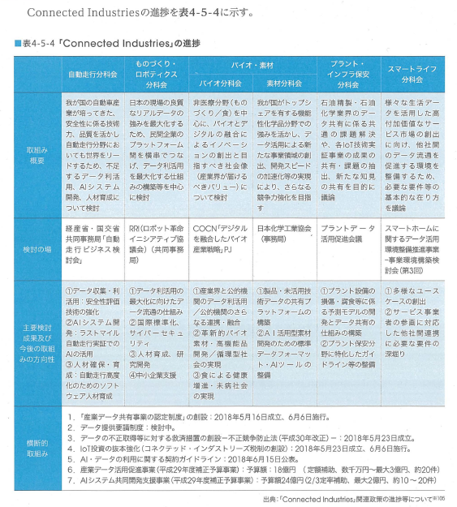
- ②その他の取組み
- 総務省と経済産業省はともに、横断的データ利活用のプラットフォーム創出を政策の根幹に据えているが、情報通信技術の所管省庁として他省庁との連携を図る前者に対し、後者は制度改革を含めた産業構造の転換を掲げて横断的施策を打ち出している。
- 具体的な制度改革としては、平成30年6月には「生産性向上特別措置法」が施行されており、プロジェクト型「規制のサンドボックス」制度が創設されている。
- 詳細は本章「4.4制度改革」を参照されたい。
- 経済産業省は平成30年6月にConnectedIndustriesの横断的取組みとしても挙げられている「AI・データの利用に関する契約ガイドライン」を公表した。
- 同ガイドラインは平成29年5月に公表された「データの利用権限に関する契約ガイドライン」の改訂版であり、データの取引に係る類型・分野ごとのユースケースを大幅に拡充するとともに、AIの開発・利用に係る契約モデ）以などが新たに整備されている。
- AIソフトウェア開発については、概して生成されるモデルの内容や性能が契約時には不明瞭であるというAI技術の特性を踏まえ、試行錯誤を繰り返しながら納得できるモデルを生成するという「探索的段階型」のモデルが示されている（詳細は本章「4.3.2我が国における『AI社会原則』の議論」を参照）。
- また、同省の所管する独立行政法人情報処理推進機構(IPA)では、AIの社会実装にあたり生じる課題と解決の方向性を検討するため、平成29年12月に産学官の有識者からなる「AI社会実装推進委員会」を設置している。同委員会では、AIの利用状況及びAIに関する制度・政策に関する調査を実施しており、平成30年6月には「AI社会実装推進調査報告書」として調査結果が公表されている（調査結果は、第5章「AIの社会実装課題と対策」を参照） 。
- 平成30年度予算では、同省の所管する国立研究開発法人新エネルギー・産業技術総合開発機構(NEDO)による「次世代人工知能・ロボット中核技術開発」や「高効率・高速処理を可能とするAIチップ・次世代コンピューティングの技術開発事業」などが実施されている（詳細は第2章「技術動向」を参照） 。
- (4)厚生労働省
- 厚生労働省は、2035年を見据えた保険医療政策のビジョンとして、平成27年に「保険医療2035提言書」を取りまとめた。
- 同提言では、単なる負担減と給付削減による現行制度の維持ではなく、イノベーションを活用したシステムとして保健医療を再構築することがうたわれている。
- また、そのビジョンを達成するために、
- ①イノベーション環境、
- ②情報基盤の整備と活用、
- ③安定した保険医療財源、
- ④次世代型の保健医療人材、
- ⑤世界をリードする厚生労働省、
- の5つのインフラを整備することが重要であるとし、特に②に関しては、具体的な施策としてデータネットワークの確立が示されている。
- 同省のAIに係る政策動向は、同提言を受けて開催された諸会議の後継である「保健医療分野におけるAI活用推進懇談会」及び「データヘルス改革推進本部」が中心となっている（図4-5-16)。
- ■図4-5-16保健医療分野におけるAl活用推進懇談会の位置づけ
- 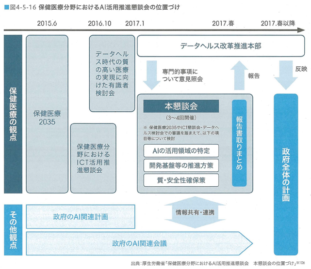
- 保健医療分野におけるAI活用推進懇談会では、保健医療分野においてAIを活用すべき領域や、AIの活用にあたる基盤構築、AIの有効性・安全性の確保について検討が行われた。
- 平成29年6月に公表された報告書では、AI開発を進めるべき6つの重点領域を定め、それぞれに施策とロードマップが示されている（表4-5-5、図4-5-17)。
- ■表4-5-5Al開発を進めるぺき6つの重点領域：施策概要
- 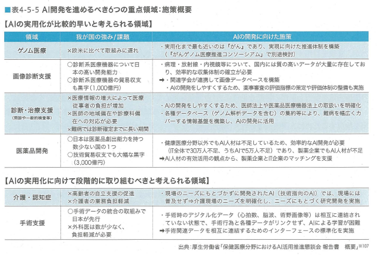
- ■図4-5-17AI開発を進めるぺき6つの重点領域：ロードマップ
- 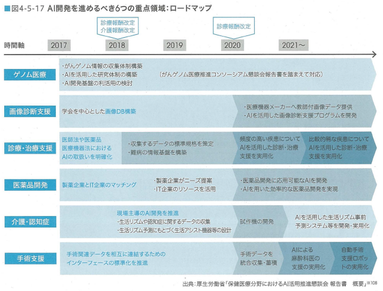
- データヘルス改革推進本部では、ICTを活用した次世代型の保健医療システムの実現に向け、具体的施策の検討が行われている。
- AI開発基盤に必要なデータを収集し研究者や民間等が利活用できるサービス（図4-5-18)や、ビッグデータやAIを活用したがんゲノム医療サービス（図4-5-19)などが、実現を目指すサービスとして検討対象となっている。
- 医療画像については、厚生労働省が所管する日本医療研究開発機構(AMED)において、国立情報学研究所(NII)が構築・運用する学術清報ネットワーク「SINETS」を活用した医療画像ビッグデータのクラウド基盤の構築と、収集した大量の医療画像を解析し医師の診断を助けるAIの開発を進めている（詳細は第2章「技術動向」を参照）。
- さらに、AI開発及び利活用促進に向けて幅広い視点から議論を行い、我が国にて取り組むべき事項を検討するために、保健医療分野AI開発加速コンソーシアムが開始され、平成30年7月23日に、第一回が開催された。
- ■図4-5-18Al開発基盤に必要なテータを収集し、研究者や民間等が利活用できるサーピス
- 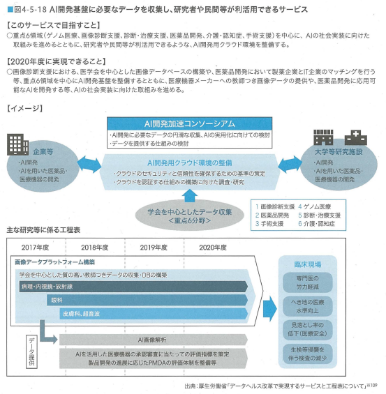
- ■図4-5-19ピッグデータやAlを活用したがんゲノム医療サーピス
- 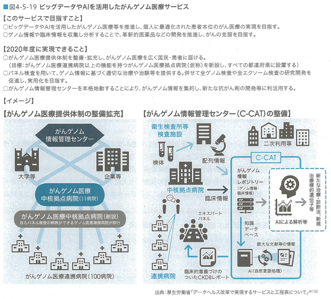
- (5)農林水産省
- 農林水産省は平成25年に「スマート農業の実現に向けた研究会」を立ち上げ、農業が抱える課題と人工知能やIoTの活用の可能性について整理を行い、ロボット技術や情報通信技術を活用した“スマート農業※111を推進している。
- また、実施すべき研究課題を整理し、「人工知能未来農業創造プロジェクト」などを通して、先端技術を有する研究機関と連携して研究開発を実施している。
- さらに、「スマート農業の実現に向けた研究会」における検討を踏まえて、圃場内や圃場周辺から監視しながら農業機械（ロボット農機）を無人で自動走行させる技術の実用化を見据え、安全性確保のためにメーカーや使用者が遵守すべき事項等を定めた「農業機械の自動走行に関する安全性確保ガイドライン」※112を平成29年3月に策定した。
- その後、実用化が近い茶園管理ロボットの自動走行にも対応するため、ガイドラインを平成30年3月に改訂し、茶園管理ロボットの自動走行に係る危険源及び危険状態に関する整理表を追加した。
- 平成30年6月には、「農林水産業・地域の活力創造プラン」を改訂し、その中で、「異業種連携による他業種に蓄積された技術・知見の活用、ロボット技術やICTを活用したスマート農業の推進、新たな品種や技術の開発・普及、知的財産の総合的な活用、生産・流通システムの高度化等により、農業にイノベーションを起こす」ことを目標にした。
- 平成30年6月の「骨太の方針2018」においても、スマート化は、重要課題への取組みの一つに位置づけられており※113、同月「未来投資戦略2018」においても、「農林水産業のスマート化」として、「農業のあらゆる現場で、センサーデータとビッグデータ解析による栽培管理の最適化、AIによる熟練者のノウハウの伝承可能化、ロボット、ドローンによる無人化・省力化や規模拡大•生産性向上を進めるとともに、バリューチェーン全体をデータでつなぎ、マーケティング情報にもとづく生産と出荷の最適化やコストの最小化に向けた取組みを推進する。
- このような取組みを林業・水産業へと拡大する」とされている。
- 「未来投資戦略2018」の中では、AIに係る施策として表4-5-6に示すように、熟練農業者のノウハウをAIにより形式知化し移転すること、遠隔監視による農機の無人走行システムの実現、ドローンとセンシング技術やAIの組み合わせによる農薬散布、施肥等の最適化、自動走行農機等の導入. 利用に対応した土地改良事業の推進など、就農者の高齢化と人材不足を課題とした取組みが挙げられている。
- また、「農業データ連携基盤」の本格稼働によるデータ共有の基盤整備も取り組むことになっている。
- ■表4-5-6r未来投資戦略2018」におけるスマート農業の推進施策
- 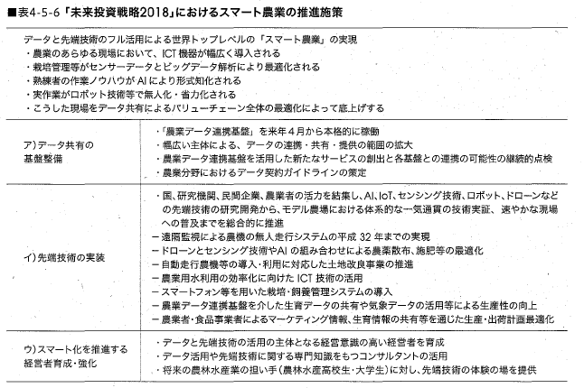
- 農業機械の自動走行については、2018年までに圃場内での自動走行システムを市販化し、2020年までに遠隔監視で無人システムを実現することが目標とされている。
- 2018年の市販化に向けた動きとしては、上記のスマート農業研究会において「農業機械の自動走行に関する安全性確保ガイドライン」が策定※114されている。
- 2020年の無人システム実現に向けた動きとしては、人検知技術の評価手法や、準天頂衛星に対応した安価な受信機の開発が進められている。
- 具体的な研究事業としては、委託プロジェクト研究「人工知能未来農業創造プロジェクト」※115がある。
- 畜産・酪農分野では、AIを活用した家畜疾病の早期発見技術の開発や、AIやICT技術を活用した周年親子放牧による収益性が高く低コストな子牛生産技術の開発などが行われている。
- 園芸分野では、AIを活用した施設野菜収穫ロボット技術の開発や、AIを活用した露地野菜収穫ロボット技術の開発などが行われている。
- (6)国土交通省
- 交通政策を所轄する国土交通省では、自動運転の実現に向けた研究開発や制度改革を主軸として、AIに係る政策が打ち出されている。
- 同省の研究開発の基本方針は、平成29年に社会資本整備審議会交通政策審議会技術部会が公表した「第4期国土交通省技術基本計画」により示されている※116。
- 同計画は、新たな価値の創出により生産性革命・働き方改革を実現し、持続可能な社会を目指すものとして策定されており、そのための3つの柱!I17の一つとして「人を主役としたIoT、AI、ビッグデータの活用を基本とし、生産性の向上を図ること」が掲げられている。
- また、そのためのポイントとして、
- ①新たな価値の創出と生産性革命の推進、
- ②基準・制度等の見直し・整備、
- ③人材の強化・育成と働き方改革
- の3つが示されており、特に②と③では「i-Construction」が効率化の実例として紹介されている。
- i-Constructionは、同省の生産性革命本部が掲げる「生産性革命プロジェクト」の一つであり、調査・測量から施工後の維持管理にいたる、全プロセスにおける情報化を前提として、建設現場の生産性向上を目指す取組みである（図4-5-20)。
- 平成29年には、様々な分野の産学官の連携の場として「i-Construction推進コンソーシアム」ml18が設立されている。
- 自動運転等のモビリティに係る動向については、「4.4.1モビリティに係る制度改革」を参照されたい。
- ■図4-5-20i-Constructionの概要
- 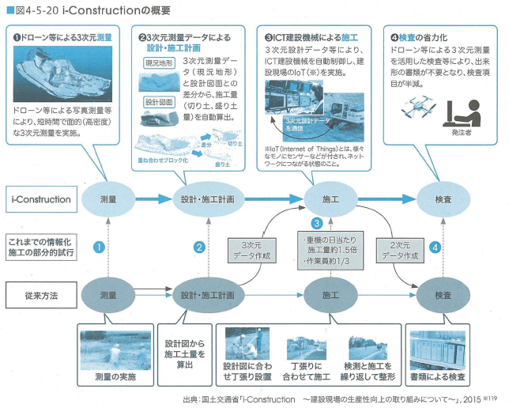
- 4.5.4 予算の動向
- 【URL要確認】◆参考文献
- [ 1 ]独立行政法人情報処理推進機構「Al社会実装推進調査報告書」、2018.
- [ 2 ]経済産業省「新産業構造ビジョン（概要版）」， 2017.
- [ 3 ]経済産業省「新産業構造ビジョン」、2017.
- [ 4]経済産業省「Al・データの利用に関する契約ガイドライン概要資料」、2018.
- [ 5 ]国土交通省「I-Construction ~建設現場の生産性向上の取り組みについて～」、2015.
- [ 6 ]国土交通省「第4期国土交通省技術基本計画」、2017.
- [ 7 ]厚生労働省「保健医療2035 提言書」、2015.
- [ 8 ]厚生労働省「保健医療分野におけるAl活用推進懇談会本懇談会の位置づけ」， 2017.
- [ 9 ]厚生労働省「保健医療分野におけるAl活用推進懇談会報告書」， 2017
- [1 OJ 厚生労働省「保健医療分野におけるAl活用推進懇談会報告書 概要」、 2017、
- [1 1]厚生労働省「データヘルス改革で実現するサービスと工程表について」、 2018.
- [1 2]国立研究開発法人科学技術振興機構r研究開発の俯緻報告書主要国の研究開発戦略(2018年）」， 2018.
- [1 3] 国立研究開発法人新エネルギー•産業技術総合開発機構「人工知能技術戦略会議について」、 2016.
- [1 4]国立研究開発法人新エネルギー・産業技術総合開発機構「人工知能の研究開発目標と産業化のロードマップ」， 2017.
- [1 5]国立研究開発法人新エネルギー・産業技術総合開発機構「人工知能技術戦略」， 2017.
- [1 6]内閣府「革新的研究開発推進プログラム(lmPACT)のテーマ設定にあたって」、 2014.
- [1 7]内閣府「第5期科学技術基本計画」， 2016.
- [1 8]内閣府「科学技術イノベーション官民投資拡大イニシアテイプく最終報告＞」、 2016.
- [1 9]内閣府「科学技術関係予算平成30年度当初予算平成29年度補正予算の概要について」， 2017.
- [20] 内閣府「官民研究開発投資拡大プログラムについて」、2017.
- [21] 内閣府「政策討議(Al戦略）論点」， 2018.
- [22] 内閣府「重点テーマの特定とSIP-PRISMを中核とした省庁連携推進（案）」、2018.
- [23] 内閣府「経済財政運営と改革の基本方針2018」、2018.
- [24] 内閣府「統合イノベーション戦略」、2018.
- [25] 内閣府「これまでの政府の取組」、2018.
- [26] 内閣府「人工知能技術戦略実行計画（案）」， 2018.
- [27] 内閣府「人工知能技術戦略実行計画（案）の概要」、2018.
- [28] 日本経済再生本部「未来投資戦略2018」,2018.
- [29] 日本総合研究所「スマート農業が実現する新たな農業の姿～社会実装が始まった農業ICT・loT技術～」， 2017.
- [30]農林水産省「スマート農業の実現に向けた研究会検討結果の中間とりまとめ」、2014.
- [31] 総務省「新たな情報通信技術戦略の在り方第3次中間答申（概要）」、2017.
- ※記載ない場合の閲覧日は2018年7月23日
- 4.6 海外の政策動向
- 4.6.1 米国
- 4.6.2 EU
- 4.6.3 英国
- 4.6.4 ドイツ
- 4.6.5 フランス
- 4.6.6 中国
- 4.6.7 インド
- 【column05】法制度はゆっくりやれば当然できる。スピードが肝／喜連川優
- 【column06】AIと倫理・社会的受容性／北野宏明
- 人工知能が、非常に影響力のある技術であるという認識の広がりとともに、その開発と利用に関して、何らかのガイドラインが必要であるという認識が広がってきた。
- AIの社会的影響としては、AIの動作が人権に影響を与える場合、仕事を奪う可能性、AIシステムの誤動作が人に危害を加える場合など、いくつかの局面への影響が議論されている。
- その中でも、AIシステムが、公平で、説明責任を満たすことができ、透明性があるという点が重要視されている。これは、Fair,Accountable, Transparent (FAT)として一つの重要なポイントである。
- 機械学習により分類や評価を行うAIシステムの基盤となるデータに、特定の人々に対して不当に不利になるバイアスがあった場合、そのデータにもとづいて学習されたAIシステムは、そのデータ上のバイアスを反映した動作をしてしまうことがありえる。
- AIシステムの開発に際しては、このようなことが引き起こされないように、公平性を担保するデータセットを利用することが求められる。
- また、AIシステムの動作に関しての説明責任と透明性が伴うという考えがあり、これに関しては、説明可能なAIや動作解析やデータセットの正当性の評価手法に関する研究を推進する必要性が派生する。
- これらの研究は推進されるべきではあるが、当面はAIシステムの動作を検証し、バイアスが発生していないかなどのチェックを継続する必要がある。
- 企業の動きも活発である。Microsoft、IBM、Google、Sonyなど企業としての立場を表明し、AI倫理ガイドラインを制定し、公開する企業が増えてきている。
- Sonyも、AI倫理ガイドラインを制定し、公開した。
- このような論点は重要であり、国、企業、国際機関を含めたステークホールダーの認識を反映して、今後のAIの在り方を議論する場が、あらゆるレベルで存在する。その一つが、Partnership on AI (PAI)であり、Google、Facebook、IBM、Microsoftなどが立ち上げ、多くの企業やNPO、大学なども参加する団体となっている。
- 日本からは、Sonyが参加している。PAIは、いわゆるGAFAなど、この分野でのトップ企業が集まっていることから、AIと社会や倫理の議論は積極的に行うと同時に、独禁法に抵触する議論は行わないという誓約書へのサインが必要となる。
- PAIでは、単にAIのリスクの側面にフォーカスするのではなく、ベストプラクティスを通じて、公共財としてのAIというコンセプトのもとで、AIを地球規模の問題の解決に貢献するアプローチなども議論されている。この背後には、AIが今後社会にもたらす影響の大きさに対する認識がある。
- 定型的な業務の多くがAIに取って代わられるなら、その部分での仕事は消失する。逆に、AIの導入で、多様なサービスが生み出され、結果的に、新しい雇用も生み出される。しかし、短期的には、AIに仕事が取って代わられる人々が、すぐに新しく生み出される仕事に就くことができるかは定かではない。
- この場合、失業問題が発生しうる。それ以外にも、高度なAI技術とその展開力を持つ企業と持たない企業。そのような企業群を有する国と有さない国の間で大きな格差が発生する可能性があるとの認識である。
- このような予想される変化に対して、十分な対応を取っておく必要があるというのがPAIでの共通認識である。
- PAIでは、8項目からなる原則を定めている。
- Tenets (信条）和訳
- 1. AI技術が可能な限り多くの人々の役に立ち、活力を与えられるように努める。
- 2. 一般の人々を啓発し、彼らの意見に耳を傾けるとともに、積極的に利害関係者の参画を促して、PAIの取組事項についてフィードバックを求めたり、PAIの活動に関する情報を提供したり、疑問に答えたりしていく。
- 3. AIが倫理社会経済法律に及ぼす影響について、オープンに研究し意見交換することを約束する。
- 4. AIの研究開発成果は、幅広い利害関係者に使用を働きかけるとともに、当該関係者に対し説明可能である必要がある。
- 5. 経済界の利害関係者と連携するとともに、代表者を招き入れ、AIに関連する懸念とAIが生み出す好機の双方がしっかり理解され、対処されるようにする。
- 6. AI技術がもたらす利益を最大化し、潜在的課題に対処するために、以下のことを行う。
- a. 個人のプライバシー保護とセキュリティ確保を図ること。
- b. AIの進化により影響を受ける可能性のあるすべての関係者の利益を理解し尊重するよう努めること。
- c. AIの研究や実用化を担うグループが、AI技術が社会全般に及ぼす潜在的影響について、社会的貴任を負い、敏感であり、かつ直接的に携わり続けるようにすること。
- d. AIの研究と技術が、堅牢で、確実で、信頼できるものであり、また安全制御のもと運用されるよう確保すること。
- e. 国際条約に違反したり、人権を侵害するようなAI技術の開発や利用に反対するとともに、害を生じないような予防手段や技術を促進する。
- 7. AI技術を人々に説明するためには、AIのシステムがどのように運用されているかが、人々にとって理解可能・解釈可能であることが重要であると考える。
- 8. 参加者全員がこれらの目標をより確実に達成できるように、AI科学者と技術者の間の、協力的で、信頼しあえる、オープンな文化を創造するよう努める。
- 産業革命で、人類は、動力を手に入れ、それが偏在化することになった。これにより長距離移動と大量生産が加速した。現在進行中のAI駆動型産業への転換で、我々は知能やより広範な能力を偏在化させることが可能となる。これが産業と社会に与える影響は極めて大きい。
- これは、教育へも大きな影響を与えると思われる。AIシステムの開発と維持・改良へのニーズは高まる。同時に、それを実務に導入する人材も必要である。これらの人材は、数学、データサイエンス、AIを理解していることのみならず、各々の領域の知識と経験も必要である。これは、数学、データサイエンス、AIが極めて広範に教育に導入され、さらに、複数の領域に精通した人材を生み出す教育へと大きな転換をする必要がある。
- AIは強力な技術であり、その影響は大きい。その力を大きく社会のために利用するベストプラクティスや、負の影響を軽減する行動、さらに社会の変革を先読みし、それに対応する教育や社会システムの整備など、多くの行動を迅速に行う必要がある。